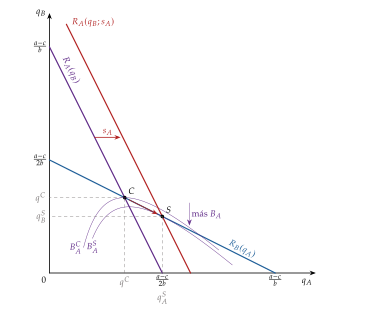
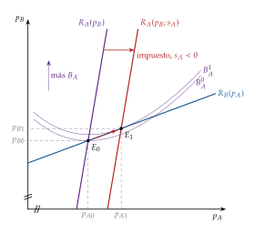
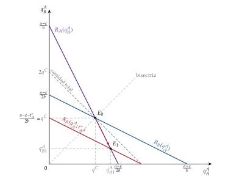
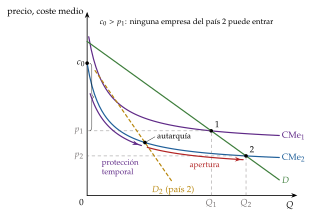
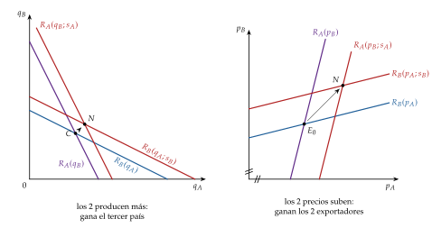
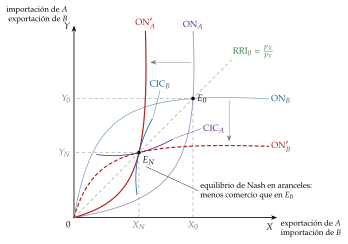
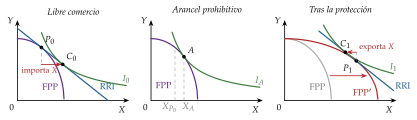
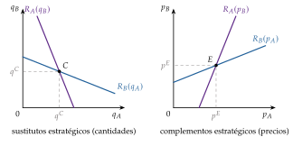

Tema 3.B.8
La política comercial (II). La política comercial estratégica.
Subvención de Brander-Spencer, impuesto de Eaton-Grossman, Airbus-Boeing, arancel estratégico, industria naciente, promoción exterior y guerras arancelarias.
Exclusivo Material exclusivo de victorgutierrezmarcos.es y la app Oposición TCEE · DCE. Puedes usarlo libremente para tu estudio personal. No se autoriza su incorporación a otras plataformas, aplicaciones o servicios. Condiciones de uso.
Introducción
Enganche:
«Arrieros somos y en el camino nos encontraremos», dice el refrán. La Unión Europea y Estados Unidos lo comprobaron con los aviones: en 2004 se denunciaron ante la Organización Mundial del Comercio (OMC) por las ayudas a Airbus y a Boeing, y años después la OMC autorizó a Estados Unidos represalias por unos 7.500 millones de dólares al año (2019) y a la Unión por unos 4.000 millones (2020) (Organización Mundial del Comercio, 2019, 2020). En 2021 pactaron suspender esos aranceles durante 5 años (Office of the United States Trade Representative, 2021), y en julio de 2026 la Unión prorrogó la suspensión mientras Estados Unidos no reactive los suyos (Gafta, 2026).
Detrás de ese pleito hay una idea: si en una industria caben pocas empresas, ayudar a la propia puede quitarle beneficios a la del otro país. Pero el otro país también juega. ¿Puede un país ganar ayudando a sus empresas a competir fuera, si los demás pueden hacer lo mismo?
Relevancia:
Teórica: la política comercial estratégica fue la primera grieta seria en el consenso librecambista desde el argumento del arancel óptimo. Con competencia imperfecta, el libre comercio deja de ser la política óptima de un país, aunque siga siendo la mejor regla para el conjunto: para Krugman (1987a, 132), el libre comercio no ha pasado de moda, pero ha perdido para siempre su inocencia y ha pasado de ser lo óptimo a ser una regla práctica razonable.
Práctica: vuelve la política industrial y comercial activa. Estados Unidos aprobó en 2022 la CHIPS and Science Act, con 52.700 millones de dólares para los semiconductores (The White House, 2022), y la Inflation Reduction Act, con créditos fiscales a la energía limpia ligados en parte a producir en el país (Congreso de los Estados Unidos, 2022); la Unión respondió con la Ley Europea de Chips, en vigor desde septiembre de 2023 (Comisión Europea, 2026), y en 2024 con derechos compensatorios a los vehículos eléctricos chinos (Comisión Europea, 2024). Los aranceles de Estados Unidos de 2025 han devuelto las represalias al primer plano [ver tema 3.B.41].
Contextualización:
La política comercial es el conjunto de medidas con que un gobierno actúa sobre el volumen, la composición o la dirección de su comercio exterior: aranceles, cuotas, subvenciones y barreras no arancelarias. Sus instrumentos y sus efectos con competencia perfecta se estudian aparte [ver tema 3.B.7]. En un país pequeño, cualquier intervención reduce el bienestar, y en uno grande, el único argumento de eficiencia a favor es el arancel óptimo, que mejora su relación real de intercambio (RRI).
La nueva teoría del comercio, con competencia imperfecta y rendimientos crecientes [ver tema 3.B.6], abrió en los años 80 otros 2 argumentos:
Problemática (preguntas clave):
¿Puede un gobierno aumentar el bienestar nacional ayudando a sus empresas a quitarles beneficios a las extranjeras?
¿Es robusta esa recomendación y qué necesita saber el gobierno para aplicarla?
¿Qué ocurre cuando los demás gobiernos responden?
¿Qué alternativa compatible con las reglas multilaterales queda para apoyar a las empresas exportadoras?
Estructura: la exposición va de la empresa al gobierno y, después, a la interacción entre gobiernos.
I. Política comercial estratégica (I): un gobierno frente a empresas extranjeras, con los modelos de tercer mercado (ofensivos), los de mercados recíprocos y la industria naciente (defensivos) y sus críticas.
II. Política de promoción exterior (II): la respuesta moderna a esas críticas, que apoya la internacionalización sin distorsionar la competencia.
III. Comportamiento estratégico entre gobiernos (III): qué pasa cuando los otros gobiernos responden, de la guerra arancelaria a la cooperación.
3.B.8. La política comercial (II). La política comercial estratégica
Introducción
I. Política comercial estratégica
1. Idea . Política ofensiva: Brander-Spencer, Eaton-Grossman, Airbus-Boeing . Política defensiva: arancel en mercados recíprocos, Eaton-Kierzkowski, industria naciente . Críticas
II. Un enfoque más moderno: política de promoción exterior
1. Objetivos . Justificación . Instrumentos
III. Comportamiento estratégico entre gobiernos: represalias y guerras comerciales
1. Represalias en los modelos de oligopolio . La guerra arancelaria (Johnson, 1953) . La salida cooperativa
Conclusión
Reparto del cante: introducción, 2′30″; I, 17′ (I.1, 2′; I.2, 7′30″: Brander-Spencer, 4′, Eaton-Grossman, 1′30″, y Airbus-Boeing, 2′; I.3, 5′30″: arancel en mercados recíprocos, 2′30″, Eaton-Kierzkowski, 0′30″, e industria naciente, 2′30″; I.4, 2′); II, 5′ (II.1, 1′; II.2, 2′30″; II.3, 1′30″); III, 4′30″ (III.1, 1′30″; III.2, 2′; III.3, 1′), y conclusión, 1′. Los gráficos imprescindibles son las funciones de reacción con la subvención (gráfico 1), las del mercado nacional con el arancel (gráfico 3) y los costes medios de la industria naciente (gráfico 4); la matriz de Airbus y Boeing (tabla 2) y la tabla de represalias (tabla 3) se escriben enteras. Al empezar el bloque I se dibuja en una esquina la tabla de modelos (tabla 1) vacía y se rellena con cada modelo; se queda toda la exposición, y en el bloque III se le añade la columna de las represalias. Las 2 funciones de reacción recuadradas, (1) y (4), se quedan también en la esquina. Los refranes se apuntan al decirlos: el del enganche, «arrieros somos y en el camino nos encontraremos», y las pegatinas «poderoso caballero es don Dinero» (la subvención como compromiso), «a caballo regalado no le mires el diente» (el tercer país), «muerto el perro, se acabó la rabia» (la industria naciente), «quien paga, manda» (la captura) y «dos no riñen si uno no quiere» (la cooperación). Las derivaciones del caso lineal y las condiciones del equilibrio de Cournot están en los anexos; lo que va en cajas grises y en notas es para las preguntas del tribunal.
Notación. \(A\) y \(B\) son los 2 países productores, con una empresa cada uno (la \(A\) y la \(B\)); en los modelos de tercer mercado venden solo a un tercer país. \(q_i\) es lo que vende la empresa \(i\) y, con mercados recíprocos, \(q_i^A\) lo que vende en el mercado \(A\); \(p(Q)\) es la demanda inversa, lineal \(a-bQ\) en los ejemplos, y \(c\) el coste marginal. \(B_i\) es el beneficio (nunca \(\pi\), que es la inflación) y \(R_A(\cdot)\) la función de reacción de la empresa \(A\), en cantidades o en precios (nunca \(\varphi\), que es la productividad del modelo de Melitz). \(s_A\) es la subvención por unidad exportada del gobierno de \(A\) (un impuesto si \(s_A<0\)), \(t_A\) su arancel por unidad importada (específico, no ad valorem) y \(W_A\) el bienestar nacional. Los superíndices \(C\) y \(S\) marcan los equilibrios de Cournot y Stackelberg.
I. Política comercial estratégica
En el cante (17′): la idea (2′): definición, traslado de rentas, segundo óptimo, ofensiva y defensiva, teoría de juegos y la tabla de modelos vacía. La política ofensiva (7′30″): Brander y Spencer (4′): supuestos (0′30″), el juego en 2 etapas con la función de reacción recuadrada y el gráfico por capas hasta el punto de Stackelberg (2′), la regla de la subvención y \(s_A^*=(a-c)/4\) (0′30″), implicaciones, evidencia y valoración en una frase cada una (1′); Eaton y Grossman (1′30″), con un boceto en precios o de palabra; Airbus y Boeing (2′), con las 2 matrices. La política defensiva (5′30″): el arancel en mercados recíprocos (2′30″), con el gráfico del dumping recíproco y la extensión de Krugman (1984) en 30 segundos; Eaton y Kierzkowski (0′30″), de palabra; la industria naciente (2′30″), con el gráfico de los costes medios y los criterios. Las críticas (2′), en 4 palabras clave. Las cajas grises, el gráfico de la frontera de posibilidades de producción y las extensiones en detalle son para las preguntas del tribunal.
Conclusión anticipada: con competencia imperfecta, un gobierno puede aumentar el bienestar de su país con una subvención, un impuesto o un arancel, porque traslada hacia su empresa rentas que se llevaría la extranjera, y con economías de escala puede crear una ventaja que el mercado no crea solo. Pero el instrumento óptimo cambia con supuestos que el gobierno no observa, y la ganancia depende de que los demás no respondan.
Nexo: con competencia perfecta, el único argumento de eficiencia a favor de intervenir es el del país grande [ver tema 3.B.7]. Pasamos a lo que cambia cuando en el mercado hay pocas empresas que se tienen en cuenta unas a otras.
I.1. Idea
Definición
La política comercial estratégica es la que usa un gobierno (subvenciones o impuestos a la exportación, aranceles) para cambiar a favor de sus empresas el resultado de su interacción estratégica con las extranjeras, y así aumentar el bienestar nacional (Brander, 1995).1 Tiene 3 elementos:
Quién actúa: el gobierno, que mueve antes que las empresas y se compromete (aprueba una ley, fija un tipo).
Con qué: subvenciones o impuestos a la exportación, aranceles a la importación y, en sentido amplio, subvenciones a la producción o a la I+D.
Para qué: que la empresa nacional se quede con una parte mayor de las rentas del oligopolio, o que una industria con economías de escala o aprendizaje se instale en el país.
Su motor es el traslado de rentas (profit shifting): en oligopolio hay beneficios extraordinarios, y el gobierno trata de que se los quede su empresa. Lo que la distingue de la política comercial tradicional no es el instrumento, sino el motivo: no busca mejorar la RRI de un país grande, sino aprovechar que hay pocas empresas y que cada una tiene en cuenta lo que harán las demás.
Justificación
Sin fallos de mercado y en un país pequeño, el libre comercio es eficiente: es el primer teorema fundamental de la economía del bienestar (1TFEB) aplicado al comercio. Si hay fallos que no se pueden corregir todos, la teoría del segundo óptimo (second best) (Lipsey y Lancaster, 1956) dice que añadir una distorsión puede mejorar el bienestar [ver tema 3.A.22]. La política comercial estratégica es una aplicación de esa idea: el oligopolio internacional es un fallo que el gobierno nacional no puede eliminar, porque no controla a la empresa extranjera.
El segundo óptimo tiene su contrapartida en el principio de focalización (Bhagwati y Ramaswami, 1963): si el fallo es interno (un mercado de capitales que no presta, una externalidad de conocimiento), el instrumento óptimo actúa sobre él directamente (un crédito, una subvención a la I+D), y el comercial es solo un segundo óptimo, porque añade una distorsión en el consumo. La política comercial es la de primer óptimo solo cuando el fallo está en el propio comercio, como las rentas que se llevan las empresas extranjeras.
Según el lado del comercio sobre el que actúa, se distinguen 2 políticas:
Política ofensiva: actúa sobre las exportaciones. Con poder de mercado, traslada rentas hacia la empresa nacional desde la empresa extranjera (Brander y Spencer, 1985) o desde los consumidores extranjeros (Eaton y Grossman, 1986).
Política defensiva: actúa sobre las importaciones. Con poder de mercado, un arancel extrae rentas a las empresas extranjeras y traslada beneficios a la nacional (Brander y Spencer, 1984; Eaton y Kierzkowski, 1984); con economías de escala, puede convertirse incluso en promoción de las exportaciones (Krugman, 1984), y con economías externas o de aprendizaje es el argumento de la industria naciente.
Teoría de juegos como herramienta
Como cada empresa tiene en cuenta lo que hará la otra, la herramienta es la teoría de juegos no cooperativos [ver tema 3.A.14], con los modelos de oligopolio de Cournot (cantidades) y Bertrand (precios) [ver tema 3.A.19]. No hay un modelo de oligopolio único, y la recomendación de política cambia con él: esa es a la vez la riqueza y la debilidad del enfoque.
Volvamos a Airbus y Boeing: en los grandes aviones civiles, los costes de desarrollo son tan altos que en el mundo caben muy pocos fabricantes. Lo que gane uno depende de si el otro entra o no, y por eso la política de cada gobierno es una jugada en un juego.
El juego tiene siempre 2 etapas: en la primera, el gobierno fija su instrumento; en la segunda, las empresas compiten. Se resuelve por inducción hacia atrás y el resultado es un equilibrio de Nash perfecto en subjuegos (ENPS): las estrategias forman un equilibrio de Nash en cada subjuego, también en los que no se alcanzan [ver tema 3.A.14].
Se usan 2 tipos de modelos:
Modelos de tercer mercado: las empresas de 2 países venden solo en un tercer país. Como nadie consume el bien en casa, el bienestar nacional es el beneficio de la empresa menos lo que cueste la política, y el traslado de rentas se ve en estado puro. Sirven para la política ofensiva: Brander y Spencer (1985), con cantidades, y Eaton y Grossman (1986), con precios.2
Modelos de mercados recíprocos: cada empresa vende en su país y en el del otro, con mercados segmentados. Sin política, es el dumping recíproco, que explica el comercio intraindustrial de un bien homogéneo [ver tema 3.B.6]; con un arancel, sirven para la política defensiva (Brander y Spencer, 1984) y, con economías de escala, para ver cómo la defensiva se convierte en ofensiva (Krugman, 1984).3
En esta exposición estudiaremos 3 modelos de política ofensiva y 3 de política defensiva, que se resumen en la tabla 1: es el mapa del bloque.
| Modelo | Competencia | Instrumento óptimo | Renta que se traslada |
|---|---|---|---|
| Tercer mercado Brander y Spencer (1985) |
Cantidades (Cournot) | Subvención a la exportación | De la empresa extranjera |
| Tercer mercado Eaton y Grossman (1986) |
Precios (Bertrand) | Impuesto a la exportación | De los consumidores extranjeros |
| Juego de entrada Airbus y Boeing |
Producir o no producir | Subvención comprometida | De la empresa extranjera, que no entra |
| Mercados recíprocos Brander y Spencer (1984) |
Cantidades (Cournot) | Arancel | De la empresa extranjera |
| Producto diferenciado Eaton y Kierzkowski (1984) |
Precios, variedades | Arancel | Del monopolista extranjero |
| Industria naciente | Competencia perfecta, economías externas | Protección temporal (segundo óptimo) | Ninguna: se crea la ventaja |
Fuente: elaboración propia a partir de Brander (1995). En azul, la política ofensiva; en dorado, la defensiva; en fondo salvia, los 3 modelos cuyo gráfico se dibuja en el cante.
I.2. Política comercial estratégica ofensiva
Una vez definida la política comercial estratégica, pasamos a su versión ofensiva: el gobierno actúa sobre las exportaciones de su empresa en un tercer mercado. Empezamos por la competencia en cantidades, la del modelo fundacional.
I.2.1. Tercer mercado con competencia en cantidades: la subvención a la exportación (Brander y Spencer, 1985)
a) Idea
En un mercado oligopolístico hay beneficios extraordinarios, protegidos por barreras a la entrada.
Lo óptimo sería eliminar esas barreras, pero muchas veces es imposible: en la aeronáutica, por ejemplo, los costes de I+D son tan altos que solo caben unas pocas empresas.
La política comercial estratégica no pretende corregir ese fallo (el poder de mercado), sino apropiarse de una parte mayor de esos beneficios: es el traslado de rentas.
Brander y Spencer (1985) parten del duopolio de Cournot [ver tema 3.A.19], con las 2 empresas vendiendo en un tercer mercado, y preguntan qué haría un gobierno que pudiera mover antes que ellas.
b) Modelo
i) Supuestos
2 países, \(A\) y \(B\), con una empresa cada uno (las empresas \(A\) y \(B\)), que producen un bien homogéneo solo para exportar a un tercer país.4
El tercer país tiene una demanda inversa \(p(Q)\), decreciente, con \(Q=q_A+q_B\).5
Costes \(C_A(q_A)\) y \(C_B(q_B)\); en el caso lineal, coste marginal constante \(c\), igual para las 2.
Compiten en cantidades, a la Cournot: cada una elige su producción tomando como dada la de la otra (variación conjetural nula) [ver tema 3.A.19].
El gobierno de \(A\) mueve primero: fija una subvención \(s_A\) por unidad exportada antes de que las empresas produzcan, y se compromete a pagarla. Como las empresas venden en un tercer país, no puede impedir que exporte la extranjera, pero sí subvencionar a la nacional.
El bienestar de \(A\) es el beneficio de su empresa menos el coste de la subvención, porque en \(A\) no se consume el bien.
ii) Desarrollo
Es un juego en 2 etapas que se resuelve por inducción hacia atrás, empezando por la segunda:
1.ª etapa: el gobierno de \(A\) elige \(s_A\);
2.ª etapa: las 2 empresas eligen a la vez cuánto exportar.
Segunda etapa: competencia en cantidades. Dado \(s_A\), cada empresa maximiza su beneficio tomando como dada la producción de la otra: \[\begin{array}{rl}\displaystyle \max_{q_A} & \displaystyle B_A=p(q_A+q_B)\,q_A-C_A(q_A)+s_A\,q_A\end{array}\qquad\qquad\begin{array}{rl}\displaystyle \max_{q_B} & \displaystyle B_B=p(q_A+q_B)\,q_B-C_B(q_B)\end{array}\]
La condición de primer orden de \(A\) iguala su ingreso marginal y su coste marginal neto de la subvención, y de ella sale su función de reacción, que la subvención desplaza; el gobierno, que lo sabe, mide el bienestar por el beneficio neto de la subvención:6
\[\frac{\partial B_A}{\partial q_A}=p(Q)+p'(Q)\,q_A-\mathrm{CMg}_A+s_A=0\;\Longrightarrow\;R_A(q_B;s_A),\qquad W_A(s_A)=B_A-s_A\,q_A\tag{1}\]
La de \(B\) es la misma sin subvención, \(p(Q)+p'(Q)\,q_B-\mathrm{CMg}_B=0\), y da \(R_B(q_A)\).
Las funciones de reacción son decrecientes y de pendiente menor que 1 en valor absoluto si se cumplen las condiciones de Hahn (Hahn, 1962) [ver tema 3.A.19]:
\(p'(Q)+q_i\,p''(Q)<0\): el ingreso marginal de cada empresa baja cuando la otra produce más. Es lo que se llama que las cantidades sean sustitutos estratégicos, \(\partial^2B_i/\partial q_i\,\partial q_j<0\) (Bulow, Geanakoplos y Klemperer, 1985): si la rival es más agresiva, a cada empresa le conviene serlo menos;7
\(p'(Q)-C_i''(q_i)<0\): la demanda corta al coste marginal desde arriba.
Con ellas, \(R_i'\in(-1,0)\): el equilibrio de Cournot existe, es único, porque la aplicación de mejores respuestas es una contracción, y es estable con el ajuste de Cournot, en el que cada empresa responde a lo que la otra hizo el periodo anterior (Hahn, 1962; Vives, 1999, cap. 4) (anexo B).
El equilibrio de Cournot-Nash sin política (\(s_A=0\)) es el corte de las 2 funciones de reacción, el punto \(C\) del gráfico 1. No es eficiente para las 2 empresas: sus isobeneficios se cortan en \(C\), y en la lente que forman las 2 ganarían produciendo menos. Pero ninguna puede comprometerse sola a producir menos (ni más).
El punto de partida: Cournot en un tercer mercado
El caso lineal simétrico. Con \(p(Q)=a-b\,Q\) y coste marginal \(c\) igual para las 2 empresas [ver tema 3.A.19]:
Cournot: \(R_i(q_j)=\frac{a-c}{2b}-\frac{1}{2}\,q_j\); en el equilibrio, \(q_A^C=q_B^C=\frac{a-c}{3b}\), \(p^C=\frac{a+2c}{3}\) y \(B_A^C=B_B^C=\frac{(a-c)^2}{9b}\): con costes iguales, las 2 producen lo mismo.
Stackelberg, con \(A\) como líder: \(q_A^S=\frac{a-c}{2b}\), que con demanda lineal coincide con la producción de monopolio; \(q_B^S=\frac{a-c}{4b}\), \(p^S=\frac{a+3c}{4}\), y la líder gana \(B_A^S=\frac{(a-c)^2}{8b}>B_A^C\). La líder elige, sobre la función de reacción de la seguidora, el punto en que su isobeneficio es tangente a ella, el punto \(S\) del gráfico 1; lo consigue porque mueve primero y no puede rectificar (Stackelberg, 1934).
La forma de las funciones de reacción con demanda no lineal o coste marginal creciente, y lo que importa de ella para la política, está en el anexo B.
Primera etapa: el gobierno elige la subvención, sabiendo cómo reaccionarán las empresas. El bienestar de \(A\) es el beneficio de su empresa neto de la subvención, que es lo mismo que el beneficio antes de cobrarla, evaluado en el equilibrio de la segunda etapa, \(q_A(s_A)\) y \(q_B(s_A)\): \[W_A(s_A)=B_A-s_A\,q_A=p(Q)\,q_A-C_A(q_A).\]
Derivando y usando la condición de primer orden de la empresa \(A\) (1), que dice \(p+p'q_A-\mathrm{CMg}_A=-s_A\): \[\frac{dW_A}{ds_A}=\underbrace{-s_A\,\frac{dq_A}{ds_A}}_{\text{coste de producir de más}}+\underbrace{q_A\,p'(Q)\,\frac{dq_B}{ds_A}}_{\text{efecto estratégico}}.\] En \(s_A=0\) solo queda el segundo término, que es positivo: la subvención hace que \(A\) produzca más, la rival produce menos (\(dq_B/ds_A<0\), sustitutos estratégicos) y el precio de lo que vende \(A\) baja menos de lo que bajaría si \(B\) no reaccionara. Algo de subvención siempre compensa.
Igualando a 0, y como \(dq_B/ds_A=R_B'(q_A)\,dq_A/ds_A\), se obtiene la regla de la subvención óptima: \[\tag{2} s_A^*=q_A\,p'(Q)\,R_B'(q_A)>0.\] Es positiva porque \(p'<0\) y \(R_B'<0\). Con ella, la condición de primer orden de \(A\) se convierte en la de una líder de Stackelberg, \(p+q_A\,p'\,(1+R_B')=\mathrm{CMg}_A\): la subvención hace que la empresa, compitiendo a la Cournot, produzca lo que produciría si pudiera mover primero.
Con demanda lineal y costes iguales (anexo A), \(s_A^*=\frac{a-c}{4}\), \(q_A=\frac{a-c}{2b}=q_A^S\), \(q_B=\frac{a-c}{4b}=q_B^S\) y \(W_A=\frac{(a-c)^2}{8b}\), el beneficio de la líder de Stackelberg, frente a \(\frac{(a-c)^2}{9b}\) sin política.8
Gráficamente (gráfico 1): la subvención baja el coste marginal neto de \(A\) y desplaza su función de reacción hacia fuera, de \(R_A\) a \(R_A(q_B;s_A)\), hasta que corta a \(R_B\) en \(S\), donde el isobeneficio de \(A\) sin contar la subvención, que es el bienestar nacional, es tangente a \(R_B\).9
El compromiso creíble: sin política, la empresa \(A\) puede anunciar que producirá \(q_A^S\), pero no es creíble, porque, si \(B\) se lo creyera y produjera \(q_B^S\), a \(A\) le convendría volver a su función de reacción y producir menos.10 La subvención es un compromiso del gobierno, aprobado antes de que las empresas decidan: cambia los incentivos de la empresa y hace creíble lo que antes era una amenaza vacía, como la capacidad instalada de A. Dixit (1980) en la disuasión de la entrada [ver tema 3.A.14].
«Poderoso caballero es don Dinero»: el dinero público consigue lo que la amenaza de la empresa, sola, no consigue.

iii) Implicaciones
El resultado es un ENPS: el gobierno elige la subvención anticipando el equilibrio de Cournot que provoca, y en ese equilibrio ninguna empresa quiere cambiar su producción.
Traslado de rentas: con la subvención,
la empresa nacional gana: produce más y su beneficio, incluso sin contar la subvención, sube;
la empresa extranjera pierde: produce menos y gana menos;
los consumidores del tercer país ganan: la cantidad total es mayor y el precio, menor (en el caso lineal, \(Q^S=\frac{3(a-c)}{4b}>Q^C=\frac{2(a-c)}{3b}\)). «A caballo regalado no le mires el diente»: el tercer país recibe, en forma de precios bajos, la subvención que paga otro.
El país \(A\) gana a costa de la empresa extranjera: es una política de empobrecimiento del vecino (beggar thy neighbour). El mundo en su conjunto, contando al tercer país, puede ganar, porque la subvención acerca la producción a la competitiva.
El resultado depende de 3 supuestos: el gobierno mueve antes que las empresas, las cantidades son sustitutos estratégicos y el gobierno extranjero no responde. Los 3 se discuten a continuación.
c) Extensiones
Varias empresas nacionales (A. K. Dixit, 1984): con \(n\) empresas nacionales y \(m\) extranjeras, todas a la Cournot con demanda lineal, la subvención óptima a cada empresa nacional es \[s_A^*=\frac{(a-c)\,(m+1-n)}{2n\,(m+1)},\] positiva solo si \(n<m+1\). Con muchas empresas nacionales, el gobierno prefiere un impuesto a la exportación: ya compiten demasiado entre ellas, y el impuesto las acerca al cártel que maximizaría la renta del país. Es el argumento del arancel óptimo visto desde el lado de las exportaciones [ver tema 3.B.7].
Libre entrada (Horstmann y Markusen, 1986): si la subvención atrae nuevas empresas nacionales, cada una produce menos, sube por su curva de coste medio y la renta se disipa: la subvención puede reducir el bienestar.
Consumo nacional del bien: si el bien también se vende en casa, la subvención a la exportación lo encarece en casa respecto del extranjero, y entra en el cálculo el excedente de los consumidores nacionales, que en la práctica puede pesar más que el traslado de rentas (R. Baldwin y Krugman, 1988).
Subvenciones a la I+D (Spencer y Brander, 1983): el compromiso puede venir de la propia empresa, que invierte en I+D para bajar su coste y ser más agresiva. Si las subvenciones a la exportación están prohibidas, una subvención a la I+D cumple el mismo papel estratégico.
Disuasión y promoción de la entrada (A. K. Dixit y Kyle, 1985): una subvención o una protección pueden decidir si una empresa entra o no en un mercado con sitio para pocas [ver tema 3.A.15]; es el juego de Airbus y Boeing (I.2.3).
Información asimétrica: la subvención óptima es mayor cuanto menor es el coste de la empresa nacional, así que la empresa tiene incentivos a decirle al gobierno que su coste es más bajo de lo que es. Con competencia en cantidades, el gobierno puede ofrecer un menú de subvenciones con el que cada tipo de empresa revele su coste; con competencia en precios, le conviene más una subvención uniforme (Brander, 1995, § 3).
Comercio y crecimiento: si las rentas vienen de la innovación, la política comercial afecta también al crecimiento, al cambiar el coste de los recursos que usa la I+D (Grossman y Helpman, 1991) [ver tema 3.B.9]; y si hay aprendizaje por la práctica que se difunde, proteger o subvencionar una industria puede cambiar la especialización a largo plazo (Krugman, 1987b).
La reacción del gobierno extranjero: si \(B\) también subvenciona, se llega a una guerra de subvenciones que se estudia junto con las demás represalias (III.1).
d) Evidencia empírica
Las simulaciones calibradas son la forma habitual de contrastar estos modelos, porque las subvenciones estratégicas son pocas y no se observa qué habría pasado sin ellas:
R. Baldwin y Krugman (1988) calibran la entrada del Airbus A300 frente al Boeing 767. El efecto principal de la subvención europea fue redistributivo: ganaron los compradores de aviones de todo el mundo y perdieron Boeing y Estados Unidos, mientras que la ganancia de Europa dependía de los supuestos. Lo que más pesa en el bienestar es el excedente de los consumidores, que los modelos de tercer mercado dejan fuera.
Krishna, Hogan y Swagel (1989) recalibran el modelo de A. K. Dixit (1988) para el automóvil en Estados Unidos: las ganancias de la política óptima son pequeñas, y no solo su tamaño sino también su signo cambia con la especificación del modelo; aplicar la política del modelo equivocado puede empeorar el bienestar.
La experiencia de los grandes aviones civiles: el acuerdo de 1992 entre Estados Unidos y la Comunidad Europea, que limitó las ayudas a sus fabricantes, se tradujo en precios de los aviones un 3,7 % más altos, coherente con una subida del 5 % del coste marginal de los fabricantes (Irwin y Pavcnik, 2004): las ayudas abarataban los aviones a los compradores, como predice el modelo. La disputa ante la OMC que siguió se estudia con la cooperación entre gobiernos (III.3).
e) Valoración
Aportación: muestra que, con oligopolio, una subvención a la exportación puede aumentar el bienestar del país que la da, algo imposible con competencia perfecta, donde solo abarata el bien al extranjero.
Límites:
Equilibrio parcial: la subvención se financia con impuestos distorsionantes. Si cada euro recaudado cuesta \(1+\lambda\) en bienestar, el gobierno maximiza \(p(Q)\,q_A-C_A(q_A)-\lambda\,s_A\,q_A\) y la subvención óptima es menor; con impuestos de suma fija (\(\lambda=0\)) se vuelve a \(s_A^*\). Además, la industria subvencionada atrae recursos que tienen rentas en otros sectores.
Represalias: si el gobierno de \(B\) hace lo mismo, los 2 países acaban peor que sin política y solo ganan los consumidores del tercer país (III.1).
Información y robustez: el gobierno tiene que conocer los costes y la demanda, y el signo de la política depende del modo de competencia, que es lo que estudiamos a continuación.
I.2.2. Tercer mercado con competencia en precios: el impuesto a la exportación (Eaton y Grossman, 1986)
a) Idea
El resultado de Brander y Spencer depende de que las empresas compitan en cantidades. Casi medio siglo después de Cournot (1838), Bertrand (1883), al reseñar su obra, objetó que las empresas fijan precios: con un bien homogéneo, cada una rebajaría el de la otra hasta el coste marginal [ver tema 3.A.19].
Eaton y Grossman (1986) cambian solo ese supuesto y la recomendación se da la vuelta: lo óptimo es un impuesto a la exportación.
b) Modelo
i) Supuestos
Los del tercer mercado de Brander y Spencer (I.2.1), con 2 cambios:
competencia en precios, a la Bertrand: cada empresa fija su precio tomando como dado el de la otra [ver tema 3.A.19];
bienes diferenciados: si una empresa sube su precio, pierde parte de sus ventas, pero no todas [ver tema 3.A.18]. Así no se cumple la paradoja de Bertrand, \(p^B=c\), y los precios quedan por encima del coste marginal.
Demandas \(q_A(p_A,p_B)\) y \(q_B(p_B,p_A)\), decrecientes en el precio propio y crecientes en el de la rival, y coste marginal constante \(c\). El gobierno de \(A\) fija \(s_A\) por unidad exportada; si es un impuesto, \(s_A<0\).
ii) Desarrollo
Segunda etapa: cada empresa elige su precio, \[\begin{array}{rl}\displaystyle \max_{p_A} & \displaystyle B_A=(p_A-c+s_A)\,q_A(p_A,p_B)\end{array}\qquad\qquad\begin{array}{rl}\displaystyle \max_{p_B} & \displaystyle B_B=(p_B-c)\,q_B(p_B,p_A)\end{array}\] y de las condiciones de primer orden salen las funciones de reacción en precios, \(p_A=R_A(p_B;s_A)\) y \(p_B=R_B(p_A)\), crecientes: los precios son complementos estratégicos, \(\partial^2B_i/\partial p_i\,\partial p_j>0\); si la rival sube su precio, a cada empresa le conviene subir el suyo (Bulow, Geanakoplos y Klemperer, 1985).
Primera etapa: el bienestar de \(A\) es el beneficio antes del impuesto (beneficio neto más recaudación), \(W_A=(p_A-c)\,q_A\). Con el mismo razonamiento que en Brander y Spencer, en \(s_A=0\) solo queda el efecto estratégico: un impuesto sube \(p_A\), la rival responde subiendo \(p_B\) (\(R_B'>0\)) y eso aumenta las ventas de \(A\). La regla del impuesto óptimo es \[\tag{3} s_A^*=(p_A-c)\,\frac{\partial q_A/\partial p_B}{\partial q_A/\partial p_A}\,R_B'(p_A)<0,\] negativa porque \(\partial q_A/\partial p_B>0\), \(\partial q_A/\partial p_A<0\) y \(R_B'>0\): es la misma regla que (2), con el signo de la pendiente de la rival cambiado.
Gráficamente (gráfico 2): en el plano \((p_A,p_B)\), el impuesto desplaza a la derecha la función de reacción de \(A\) hasta que corta a \(R_B\) en el punto en que el isobeneficio de \(A\), sin contar el impuesto, es tangente a \(R_B\): el liderazgo en precios de \(A\) [ver tema 3.A.19]. Sin política, \(A\) podría anunciar que subirá su precio, pero no es creíble, porque perdería ventas frente a una rival más barata; el impuesto, que la obliga a cobrar más, sí lo es.

iii) Implicaciones
El país \(A\) gana: el beneficio antes del impuesto, que es el bienestar nacional, sube. La empresa nacional paga el impuesto y su beneficio neto puede bajar, pero lo que pierde lo recauda el gobierno, y algo más (en el caso lineal del anexo A, el bienestar sube y el beneficio neto de la empresa baja).
La empresa extranjera gana: vende más y más cara, porque la nacional compite menos.
Los consumidores del tercer país pierden: los 2 precios suben.
A diferencia de Brander y Spencer, la renta no se quita a la empresa rival, sino a los consumidores extranjeros: el impuesto actúa como un cártel que el gobierno impone a su propia empresa.
c) Extensiones
La regla general (Eaton y Grossman, 1986): la política óptima depende de la diferencia entre cómo cree cada empresa que responderá la rival (su conjetura) y cómo responde de verdad:
con Cournot, la empresa cree que la rival no cambiará su cantidad, pero la rival la reduce: la empresa produce menos de lo que le conviene al país, y lo óptimo es una subvención;
con Bertrand, cree que la rival no cambiará su precio, pero la rival lo sube: la empresa compite demasiado, y lo óptimo es un impuesto;
con conjeturas consistentes, que coinciden con la respuesta real, la empresa ya hace lo que haría si el gobierno la guiara, y lo óptimo es el libre comercio.
Más empresas, entrada y consumo nacional: los mismos autores muestran que con varias empresas nacionales aparece un motivo para gravar (que compitan menos entre ellas), que con libre entrada la renta se disipa y que, si el bien se consume en casa, la política tiene que combinar un instrumento para la producción y otro para el consumo.
La reacción del gobierno extranjero: si \(B\) también grava su exportación, los 2 países exportadores ganan frente al libre comercio, porque los 2 impuestos hacen de cártel, y pierde el tercer país: no es un dilema del prisionero (III.1).
d) Evidencia empírica
Los impuestos a la exportación con este fin son raros en los países desarrollados (la Constitución de Estados Unidos los prohíbe). La evidencia es indirecta: el modo de competencia que se estima en cada industria decide el signo de la política, y en las calibraciones ese signo cambia con la especificación (Krishna, Hogan y Swagel, 1989).
e) Valoración
Aportación: deja claro que lo que justifica la intervención no es el oligopolio en sí, sino la diferencia entre la conjetura de las empresas y la respuesta real de la rival.
Límites: la política estratégica no es robusta. Un cambio de supuesto aparentemente menor, precios en lugar de cantidades, cambia una subvención por un impuesto, y para acertar el gobierno tiene que saber cómo compiten las empresas, algo que no observa y que ellas no tienen interés en revelarle. Es la crítica más seria de todo el enfoque (Brander, 1995, § 3).
I.2.3. Un ejemplo: Airbus frente a Boeing
Los modelos anteriores tienen una versión discreta, con solo 2 estrategias, que Krugman (1987a, 136) cuenta con una matriz de pagos. 2 empresas, Boeing en Estados Unidos y Airbus en Europa, deciden si producen o no un avión nuevo. El mercado solo da para una: si entra una sola, gana 100; si entran las 2, pierden 5 cada una (tabla 2, izquierda).
Hay 2 equilibrios de Nash en estrategias puras: produce una y la otra no. Si Boeing tiene ventaja y se compromete antes, el resultado es que Boeing produce y Airbus no: Boeing gana 100 y Airbus, 0.
Si el gobierno europeo se compromete, antes de que Boeing decida, a dar a Airbus 10 si produce, producir pasa a ser para Airbus una estrategia dominante: gana 5 aunque Boeing entre, y 110 si no entra. Boeing, que lo sabe, no entra (tabla 2, derecha).
Con 10 de subvención, los beneficios de Airbus pasan de 0 a 110: 100 son renta trasladada de Estados Unidos a Europa. Es el traslado de rentas de Brander y Spencer en versión discreta: la subvención no paga producir, paga que la rival no entre.
Siguiendo con Airbus y Boeing: la secuencia importa. El gobierno mueve primero, Boeing decide después y la subvención solo funciona porque está comprometida antes; si el gobierno europeo pudiera retirarla una vez que Boeing se ha quedado fuera, la amenaza dejaría de ser creíble.
| Sin subvención | Con subvención de 10 | ||||
| Airbus | Airbus | ||||
| Boeing | Producir | No producir | Producir | No producir | |
| Producir | \((-5,-5)\) | \((100,0)\) | \((-5,5)\) | \((100,0)\) | |
| No producir | \((0,100)\) | \((0,0)\) | \((0,110)\) | \((0,0)\) | |
Fuente: elaboración propia a partir de Krugman (1987a, 136). Sombreados, los equilibrios de Nash: 2 sin subvención y uno solo con ella.
La política ofensiva traslada rentas porque el gobierno se compromete antes que las empresas: con competencia en cantidades, una subvención lleva a la empresa nacional al punto de Stackelberg; con competencia en precios, lo que hace falta es un impuesto; en un juego de entrada, la subvención decide quién se queda el mercado. El instrumento cambia con el modelo: es la fuerza y la debilidad del enfoque.
I.3. Política comercial estratégica defensiva
Una vez vista la política que actúa sobre las exportaciones, pasamos a la que actúa sobre las importaciones. Ahora las empresas venden también en casa, y el gobierno puede gravar a la empresa extranjera en su propio mercado. Veremos 2 modelos de oligopolio, con producto homogéneo y con producto diferenciado, y el argumento de la industria naciente, que no necesita oligopolio.
I.3.1. Mercados recíprocos: el arancel estratégico (Brander y Spencer, 1984)
a) Idea
Con mercados recíprocos, cada empresa vende en su país y en el del otro. Sin política, el duopolio de Cournot con mercados segmentados y costes de transporte explica que se comercie el mismo bien en las 2 direcciones, el dumping recíproco (Brander, 1981; Brander y Krugman, 1983) [ver tema 3.B.6]:
cada empresa invade el mercado de la otra porque allí su cuota es menor y su demanda percibida, más elástica;
el comercio rompe los monopolios nacionales (efecto procompetitivo), pero gasta recursos en transportar el mismo bien.
Brander y Spencer (1984a) ponen un arancel en lugar del coste de transporte: el gobierno de \(A\), antes de que las empresas compitan, encarece a la empresa extranjera en su mercado y le traslada beneficios a la nacional (Brander, 1995). El coste de transporte, que era un dato, pasa a ser un instrumento.
b) Modelo
i) Supuestos
Los del dumping recíproco [ver tema 3.B.6]: 2 países con una empresa cada uno, bien homogéneo, coste marginal constante \(c\), mercados segmentados (cada empresa decide por separado cuánto vende en cada país y no hay arbitraje) y competencia a la Cournot en cada mercado, con demanda \(p^A(Q^A)=a-b\,Q^A\) y \(Q^A=q_A^A+q_B^A\).
Para aislar el arancel, sin costes de transporte (\(\tau=1\)).11
Nuevo: en una primera etapa, el gobierno de \(A\) fija un arancel específico \(t_A\) sobre cada unidad que la empresa extranjera vende en \(A\). El coste marginal de la extranjera en \(A\) pasa de \(c\) a \(c+t_A\): el arancel hace el papel del coste iceberg.
Como el coste marginal es constante y los mercados están segmentados, lo que pasa en el mercado \(A\) no afecta al \(B\): basta estudiar el mercado \(A\).12
ii) Desarrollo
Segunda etapa: las empresas compiten en el mercado \(A\), \[\begin{array}{rl}\displaystyle \max_{q_A^A} & \displaystyle B_A^A=p^A\big(q_A^A+q_B^A\big)\,q_A^A-c\,q_A^A\end{array}\qquad\qquad \begin{array}{rl}\displaystyle \max_{q_B^A} & \displaystyle B_B^A=p^A\big(q_A^A+q_B^A\big)\,q_B^A-(c+t_A)\,q_B^A\end{array}\] y las funciones de reacción son las del dumping recíproco con \(c+t_A\) en lugar de \(\tau c\):
\[R_A(q_B^A)=\frac{a-c}{2b}-\frac{1}{2}\,q_B^A,\qquad R_B(q_A^A;t_A)=\frac{a-c-t_A}{2b}-\frac{1}{2}\,q_A^A\tag{4}\]
El arancel desplaza hacia el origen la función de reacción de la extranjera, como lo hacía el coste de transporte (gráfico 3): la nacional vende más (\(\partial q_A^A/\partial t_A=1/3b\)), la extranjera menos (el doble, \(\partial q_B^A/\partial t_A=-2/3b\)), y el precio sube solo un tercio del arancel (\(\partial p^A/\partial t_A=1/3\)).
Primera etapa: el gobierno elige el arancel. Maximiza el bienestar del país en el mercado \(A\), la suma del excedente de los consumidores, el beneficio de la empresa nacional en casa y la recaudación: \[\tag{5} W_A(t_A)=\underbrace{\tfrac{b}{2}\,(Q^A)^2}_{\mathrm{EC}^A}+\underbrace{(p^A-c)\,q_A^A}_{B_A^A}+\underbrace{t_A\,q_B^A}_{\text{recaudación}}.\]
El arancel tiene 3 efectos:
sobre los productores: desplaza hacia dentro la función de reacción de la extranjera, que para cualquier producción de la nacional quiere vender menos porque su coste efectivo es mayor; la nacional vende más y gana más;
sobre los consumidores: menos cantidad y precio más alto, por el arancel y por el menor número de unidades, que deshace en parte el efecto procompetitivo del comercio; baja el excedente de los consumidores;
sobre la recaudación: el gobierno ingresa \(t_A\,q_B^A\), y la paga en 2 tercios la empresa extranjera, porque el precio solo sube un tercio del arancel: es la extracción de rentas.
Con demanda lineal pesan más los 2 últimos (la renta que se quita a la extranjera y la que se traslada a la nacional), y el arancel estratégico óptimo es positivo (anexo A): \[\tag{6} t_A^*=\frac{a-c}{3}>0.\] La empresa extranjera sigue vendiendo, \(q_B^A=\frac{a-c}{9b}\), pero mucho menos; la nacional vende \(\frac{4(a-c)}{9b}\), y el bienestar del país en su mercado sube en \(\frac{(a-c)^2}{18b}\) respecto del libre comercio.
Con un arancel prohibitivo, \(t_A\geq\frac{a-c}{2}\), la extranjera deja de vender en \(A\) y se vuelve al monopolio nacional: son los 2 monopolios nacionales protegidos por el arancel de los que parte el dumping recíproco.

Fuente: elaboración propia a partir de Brander y Spencer (1984a) y Feenstra (2016, cap. 7).
iii) Implicaciones
El arancel hace que caigan los beneficios de la empresa extranjera en el mercado nacional y que suban los de la nacional; el precio sube y la cantidad total baja. El comercio no desaparece: sigue habiendo comercio en las 2 direcciones, aunque menos.
El signo no está garantizado: el arancel encarece el bien a los consumidores, y con demandas muy convexas el precio puede subir más que el arancel; entonces, frente a una empresa extranjera con poder de mercado, lo óptimo puede ser una subvención a la importación, aunque lo habitual es un arancel (Brander, 1995).
El mercado \(B\) es simétrico, así que los beneficios de cada empresa dependen de los aranceles de los 2 gobiernos. Si los 2 ponen su arancel óptimo, el equilibrio no cooperativo es peor para los 2 que el libre comercio (III.1).
c) Extensiones
La protección de las importaciones como promoción de las exportaciones (Krugman, 1984). Los empresarios siempre han dicho que un mercado nacional protegido ayuda a exportar, y los economistas lo negaban; con oligopolio y economías de escala pueden tener razón, y la política defensiva se convierte en ofensiva:
supuestos: los de los mercados recíprocos, con una diferencia: el coste marginal de cada empresa baja con su producción total, la que vende en los 2 mercados (economías de escala, aprendizaje o I+D que se reparte entre más unidades). El gobierno de \(A\) reserva a su empresa una parte de su mercado con un arancel o una cuota;
desarrollo, en cadena: la empresa nacional vende más en casa y la extranjera, menos; la nacional, al producir más, tiene un coste marginal menor, y la extranjera, al producir menos, uno mayor; con esos costes, en el mercado extranjero la nacional vende más y la extranjera menos, lo que vuelve a bajar el coste de la una y a subir el de la otra;
implicaciones: proteger el mercado nacional aumenta las exportaciones de la empresa nacional. La protección actúa como la subvención de Brander y Spencer: es un compromiso que mueve hacia fuera la función de reacción de la empresa nacional en todos los mercados;
evidencia y límites: en la simulación de las memorias de 16K, el mercado japonés protegido fue decisivo para que las empresas japonesas exportaran, pero la protección costó a Japón más de lo que le dio (R. Baldwin y Krugman, 1986). Que la protección aumente las exportaciones no quiere decir que aumente el bienestar.
Más empresas y libre entrada: con varias empresas en cada país, el arancel sigue trasladando ventas a las nacionales y subiendo el precio; con libre entrada y beneficios nulos desaparece el traslado de rentas, pero el arancel puede seguir mejorando el bienestar si atrae producción al país (Brander, 1995).
d) Evidencia empírica
La forma más directa de ver la extracción de rentas es mirar quién paga el arancel. En los aranceles de Estados Unidos de 2018, el precio en frontera neto del arancel apenas bajó: el arancel lo pagaron casi entero los compradores estadounidenses (Amiti, Redding y Weinstein, 2019; Fajgelbaum et al., 2020). La extracción de rentas, que exige que el exportador baje su precio, apenas se dio.
e) Valoración
Aportación: el arancel, que con competencia perfecta solo tiene sentido para un país grande, puede mejorar el bienestar de un país pequeño frente a una empresa extranjera con poder de mercado: el motivo no es la RRI del país, sino la renta de la empresa.
Límites: es un modelo de equilibrio parcial, con coste marginal constante y mercados segmentados; el signo depende de la curvatura de la demanda, y el otro gobierno puede responder.
I.3.2. Oligopolio con producto diferenciado (Eaton y Kierzkowski, 1984)
a) Idea
Con producto diferenciado y mercados no segmentados, un arancel puede extraer renta a un monopolista extranjero que vende en un país sin producción propia. Si el monopolista cobra a los consumidores todo lo que están dispuestos a pagar, el arancel no sube el precio: lo paga la empresa extranjera, de su renta, y el país se queda con una parte de ella sin que sus consumidores pierdan nada. Es el mismo traslado de rentas, ahora frente a un monopolio [ver tema 3.A.17] en un mercado de variedades (Eaton y Kierzkowski, 1984) [ver tema 3.A.18].
b) Modelo
Supuestos: un bien homogéneo en competencia perfecta y otro con diferenciación horizontal y oligopolio; las empresas eligen primero la variedad, con un coste fijo, y después el precio; los mercados no se pueden segmentar, y cada consumidor compra su variedad si su precio no supera un precio crítico [ver tema 3.A.18].
Desarrollo e implicaciones: si el país \(A\) no produce el bien diferenciado y el de \(B\) lo vende un monopolista que cobra en \(A\) justo el precio crítico, \(A\) queda con el libre comercio igual que en autarquía. Un arancel no cambia el precio que pagan sus consumidores, que sigue siendo el crítico: lo paga el monopolista, de su renta. El arancel óptimo es el que lo deja indiferente entre exportar o no, y el bienestar de \(A\) sube en lo que recauda (el desarrollo, en el anexo D).
c) Valoración
Aportación: lleva la extracción de rentas a un monopolio extranjero con producto diferenciado, sin necesidad de que el país produzca el bien.
Límites: el resultado depende de un caso muy particular (ningún productor nacional y un monopolista que cobra el precio crítico), y el arancel óptimo exige conocer la valoración de los consumidores y los costes del monopolista.
I.3.3. El argumento de la industria naciente
a) Idea
Hasta ahora la intervención se justificaba por el poder de mercado con interdependencia estratégica. La industria naciente es otra justificación de la política defensiva: una industria que podría ser competitiva no llega a instalarse porque al principio sus costes son altos y nadie da el primer paso. Una protección temporal le da tiempo a crecer, bajar sus costes y competir sin ayuda.
Es el argumento proteccionista más antiguo con base económica:
Hamilton (1791), primer secretario del Tesoro de Estados Unidos, y List (1841) en Alemania defendieron aranceles para proteger las manufacturas nacientes frente a las británicas;
Mill (1909, lib. V, cap. X) lo admitió como la única excepción al librecambio;
y hoy lo recupera Ha-Joon Chang (2002) para los países en desarrollo, con el argumento de que los países ricos se industrializaron así.
En el siglo XX inspiró la industrialización por sustitución de importaciones, sobre todo en América Latina [ver tema 3.B.28].13
Hacen falta 3 cosas a la vez:
rendimientos crecientes (economías de escala externas o de aprendizaje), para que los costes bajen al crecer;
un fallo de información o de financiación que impida que la iniciativa privada lo haga sola (si no, el mercado financiaría al que entra);
y un accidente histórico: que otro país haya empezado antes.
b) Modelo
i) Supuestos
Una industria con economías de escala externas: el coste medio de cada empresa baja cuando crece la producción de toda la industria del país (proveedores especializados, mercado de trabajo común, difusión del conocimiento) [ver tema 3.B.6].14 Hay muchas empresas en competencia perfecta, y el precio es igual al coste medio de la industria.
2 países, 1 y 2, que pueden producir el bien (los botones de Krugman, Obstfeld y Melitz (2018, cap. 7)). El país 2 tiene costes menores, por ejemplo salarios más bajos: su curva de coste medio, \(\mathrm{CMe}_2\), está por debajo de la del país 1, \(\mathrm{CMe}_1\), para cualquier tamaño de la industria. Pero la industria empezó antes en el país 1.
ii) Desarrollo
Sin política (gráfico 4): la industria está en el país 1, que abastece al mundo en el punto 1 al precio \(p_1\). Una empresa del país 2 que entrara sola tendría el coste \(c_0\) de una industria sin tamaño, mayor que \(p_1\): ninguna entra, y la ventaja de costes del país 2 no se materializa.15 Como la única forma de aprovechar esa ventaja es producir mucho, ninguna empresa tiene incentivos a dar el primer paso, y el mundo compra más caro de lo que podría (accidente histórico).
Por qué el mercado no lo resuelve: si la industria podría ser competitiva, ¿por qué no la desarrolla la iniciativa privada? Se señalan 2 fallos de mercado (Krugman, Obstfeld y Melitz, 2018, cap. 11):
Imperfecciones del mercado de capitales: si el país no tiene instituciones financieras que lleven el ahorro de los sectores tradicionales a los nuevos, las industrias nuevas solo crecen con sus beneficios presentes, y los bajos beneficios iniciales frenan la inversión aunque a largo plazo sea rentable. Lo óptimo sería crear un mercado de capitales eficiente; la protección es un segundo óptimo.
Apropiabilidad: las primeras empresas de una industria pagan costes (aprender la técnica, abrir el mercado) de los que se aprovechan las que vienen después sin pagarlos. Aunque el beneficio social supere al coste, nadie quiere ser el primero. Lo óptimo es compensar a los pioneros por esa contribución; la protección, de nuevo, es un segundo óptimo.
Con protección: si el país 2 cierra temporalmente su mercado, su industria crece para abastecerlo y baja por su curva de coste medio, desde \(c_0\) hasta su punto de autarquía, en el que produce más barato que el precio del país 1. Cuando quita la protección, sus empresas venden más barato que las del país 1, la industria se traslada y el mundo queda en el punto 2, con un precio menor, \(p_2\).
Con los números del gráfico, la protección apenas cuesta, porque el precio de autarquía del país 2 ya es menor que \(p_1\). Con economías dinámicas o de aprendizaje, en cambio, el coste inicial supera durante un tiempo al precio mundial, y los consumidores pagan la protección [ver tema 3.A.12]. El mismo argumento en equilibrio general, con la frontera de posibilidades de producción, está en el anexo E.

Fuente: elaboración propia a partir de Krugman, Obstfeld y Melitz (2018, cap. 7).
iii) Implicaciones
La protección solo está justificada si se cumplen 3 criterios (Kemp, 1960):
criterio de Mill: la industria llegará a competir sin protección a los precios internacionales;
criterio de Bastable: el valor actual de las ganancias futuras supera el coste de la protección mientras dura (los precios más altos que pagan los consumidores);
criterio de Kemp: además, las ganancias no las puede apropiar la empresa que da el primer paso; si pudiera, la empresa invertiría sola, aceptando pérdidas al principio, y no haría falta protección.
El tercero es el decisivo y separa los tipos de economías de escala:16
con economías internas o de aprendizaje que se queda la propia empresa, el mercado basta, salvo que el mercado de capitales no preste contra los beneficios futuros: entonces el fallo está en el crédito, y lo óptimo es corregirlo allí;
con economías externas o aprendizaje que se difunde a otras empresas, nadie quiere ser el primero, porque pagaría el coste de aprender y los demás se aprovecharían. Hay un fallo de coordinación con equilibrios múltiples, y una protección (o una subvención) que haga rentable entrar a todos a la vez puede estar justificada: con ella, entrar pasa a ser una estrategia dominante, y la protección se levanta cuando el coste medio baja del precio internacional.
Aun así, se aplica el principio de focalización: si el fallo es una externalidad de conocimiento o un mercado de capitales que no presta, lo óptimo es corregirlo en el origen (con crédito o con una compensación al pionero), y el arancel es solo un segundo óptimo, porque además encarece el bien a los consumidores (Bhagwati y Ramaswami, 1963; R. E. Baldwin, 1969) [ver tema 3.A.22].
«Muerto el perro, se acabó la rabia»: el fallo se corrige donde nace, no en la frontera.
c) Evidencia empírica
Casos históricos, con resultados mixtos:
los raíles de acero en Estados Unidos a finales del siglo XIX: con fuerte aprendizaje, el arancel tuvo un efecto neto positivo pero pequeño, y perjudicó a los compradores de raíles a corto y a largo plazo (Head, 1994);
la hojalata en Estados Unidos con el arancel McKinley de 1890: la industria se instaló gracias a él, pero habría llegado unos 10 años después sin protección, y la protección no supera un análisis de coste-beneficio (Irwin, 2000).
Experimentos naturales recientes, más favorables:
el bloqueo napoleónico (1803-1815) protegió del comercio británico a unas regiones francesas más que a otras por razones ajenas a la industria: las más protegidas adoptaron antes la hilatura mecánica del algodón y tuvieron más actividad industrial durante décadas (Juhász, 2018);
la política de industria pesada y química de Corea del Sur (1973-1979) hizo crecer las industrias elegidas y las que compraban sus productos, y sus efectos duraron después de retirarla (Lane, 2025).
La literatura reciente es más favorable a la política industrial que la de hace 30 años, pero subraya que lo que funciona son apoyos temporales, condicionados a exportar o a competir, y no la protección indefinida de la sustitución de importaciones (Harrison y Rodríguez-Clare, 2010; Juhász, Lane y Rodrik, 2024).
d) Valoración
Aportación: es el único argumento proteccionista que admitían los clásicos y el que mejor resiste: con aprendizaje que se difunde, el mercado no lo resuelve solo. Melitz (2005) muestra que la conveniencia de proteger y el mejor instrumento dependen de cuánto y con qué rapidez aprende la industria y de lo sustituibles que sean los bienes nacionales y los extranjeros.
Límites:
el gobierno tiene que saber qué industria cumplirá los 3 criterios, y la protección atrae a quien busca rentas antes que a quien aprende;
la protección priva a la industria de la competencia y de la difusión tecnológica que llega con el comercio, y es difícil de retirar: lo temporal se vuelve permanente;
los demás países pueden responder.
I.4. Críticas a la política comercial estratégica
Recapitulando, los modelos del bloque muestran que la intervención puede mejorar el bienestar. Las críticas se agrupan en 4, de lo teórico a lo práctico:
Información: la política óptima cambia de signo con el modo de competencia (subvención con Cournot, impuesto con Bertrand, nada con conjeturas consistentes), con el número de empresas y con la curvatura de la demanda, y el gobierno tiene que conocer costes y conducta que las empresas no tienen interés en revelarle (Eaton y Grossman, 1986; A. K. Dixit, 1984; Brander, 1995, § 3). Seleccionar los sectores no es fácil: habría que apoyar los de demanda creciente, más eslabonamientos y más externalidades, y las calibraciones muestran que aplicar la política del modelo equivocado puede empeorar el bienestar (Krishna, Hogan y Swagel, 1989).
Volvamos a Airbus y Boeing: si Boeing tuviera ventaja de costes y ganara algo aunque entraran las 2, la misma subvención de 10 llevaría a que produjeran las 2, y Europa pagaría la subvención para que Airbus apenas ganara (anexo C).
Disipación de la renta: con libre entrada, la subvención atrae empresas y la renta desaparece (Horstmann y Markusen, 1986); y, como es equilibrio parcial, se olvida que la subvención se paga con impuestos que distorsionan y que atrae recursos de otros sectores. Las diferencias de productividad que crea son artificiales y difíciles de sostener.
Economía política: la política industrial se presta a la búsqueda de rentas y a la captura por los grupos de presión, que desvían recursos de la producción a conseguir ventajas [ver tema 3.A.20]; y la protección priva a la industria de la difusión tecnológica del comercio.
«Quien paga, manda»: quien financia la campaña elige el sector protegido.
Represalias y reglas: es una política de empobrecimiento del vecino, que invita a responder y suele acabar en un dilema del prisionero (III). Por eso las reglas multilaterales la limitan: el Acuerdo sobre Subvenciones y Medidas Compensatorias de la OMC prohíbe las subvenciones supeditadas a la exportación o al uso de productos nacionales (art. 3) y permite recurrir contra las demás cuando causan efectos desfavorables, con derechos compensatorios o en el sistema de solución de diferencias (Organización Mundial del Comercio, 1994) [ver tema 3.B.33].17
Por todo ello, Krugman (1987a) concluía que el libre comercio sigue siendo la mejor regla práctica, aunque ya no se pueda decir que sea siempre la política óptima.
Precisamente por estas críticas, los países, sobre todo los desarrollados, que no pueden subvencionar las exportaciones, prefieren un instrumento que corrija los fallos de mercado sin tocar el precio de lo que se exporta: la promoción exterior.
Con competencia imperfecta, un gobierno que mueve primero puede trasladar rentas a su país: con una subvención si sus empresas compiten en cantidades, con un impuesto si compiten en precios, con un arancel si la rival vende en su mercado; y con economías externas, una protección temporal puede crear la ventaja que el accidente histórico impidió. Pero el instrumento depende de lo que el gobierno no sabe, la renta se disipa con la entrada y la captura, y todo descansa en que los demás no respondan. Esas críticas llevan a la promoción exterior y a la interacción entre gobiernos.
II. Un enfoque más moderno: política de promoción exterior
En el cante (5′): los objetivos (1′): ofensiva tradicional frente a moderna, los 2 rasgos de la definición y el objetivo final; la justificación (2′30″): por qué más internacionalización (las exportadoras son más productivas, Melitz) y por qué intervenir (las 3 barreras como fallos de mercado), con la evidencia de las agencias de promoción; los instrumentos (1′30″): las 5 categorías y un ejemplo español de cada una, sin cifras. En la pizarra, un esquema de 3 casillas: objetivos, justificación, instrumentos. Los 5 motivos y las 3 barreras en detalle y los programas españoles son para las preguntas del tribunal.
Conclusión anticipada: la promoción exterior es la forma de política comercial ofensiva que sobrevive a las críticas del bloque I. No traslada rentas desde otros países: baja los costes de entrar en los mercados exteriores, que el mercado no baja solo porque la información tiene rasgos de bien público y la financiación sufre de información asimétrica. Y es compatible con las reglas de la OMC.
Nexo: una vez vistas las razones y los límites de trasladar rentas, pasamos a la política ofensiva que los países desarrollados usan hoy: apoyar la internacionalización sin subvencionar lo que se exporta.
II.1. Objetivos
Idea
La política comercial tiene 2 dimensiones, según el flujo de comercio sobre el que actúe:
la política comercial defensiva comprende las medidas dirigidas a reducir las importaciones: aranceles, restricciones cuantitativas, barreras administrativas;
la política comercial ofensiva abarca las medidas que buscan aumentar el bienestar actuando sobre las exportaciones. Tiene a su vez 2 enfoques:
Definición
La política de promoción exterior es un apoyo genérico y directo a la internacionalización de la empresa. Sus 2 rasgos:
Apoyo genérico: pone a disposición de las empresas un conjunto de instrumentos, pero no está ligado al volumen de lo que exportan. Por eso no es una subvención supeditada a la exportación, de las que prohíbe el Acuerdo sobre Subvenciones y Medidas Compensatorias (Organización Mundial del Comercio, 1994).
Internacionalización, un concepto más amplio que el de exportación:
la política tradicional puede dar un éxito puntual a una empresa, ligado al apoyo oficial; la moderna busca apoyarla en la primera fase de su salida al exterior, para que cree lazos estables y duraderos y deje de depender del apoyo público;
abarca la exportación y la inversión directa en el exterior [ver tema 3.B.18]. La política tradicional las trataba como compartimentos estancos, con instrumentos para exportadoras y otros para inversoras; la promoción exterior ofrece los mismos instrumentos y deja que cada empresa elija si exporta, invierte o hace las 2 cosas, como hacen a menudo las empresas que salen fuera.
Objetivo principal y objetivos intermedios
El objetivo principal es promover el crecimiento y el empleo. Los objetivos intermedios son el aumento de la competitividad, que permite exportar más, y un mayor acceso a los mercados exteriores, para integrarse mejor en las cadenas globales de valor.
II.2. Justificación
¿Por qué intervenir? La respuesta tiene 2 pasos, que conviene separar para no confundir los beneficios de exportar con un fallo de mercado:
¿por qué es deseable un mayor nivel de internacionalización?
¿y por qué no lo alcanza el mercado solo, de modo que tenga que intervenir el sector público?
Por qué es deseable más internacionalización
Hay 5 motivos, para las empresas y para el país:
Productividad: las empresas exportadoras son pocas, más grandes y más productivas, y lo eran ya antes de exportar (Bernard y Jensen, 1999; Bernard et al., 2007; Organización Mundial del Comercio, 2008, § C). Con empresas heterogéneas, solo las más productivas cubren el coste fijo de exportar (Melitz, 2003), y el umbral es aún mayor para invertir en el exterior (Helpman, Melitz y Yeaple, 2004) [ver tema 3.B.6]: favorecer la internacionalización lleva recursos a las empresas más productivas y sube la productividad agregada. Con más tamaño, además, se aprovechan las economías de escala y se gana capacidad financiera.
Innovación: las empresas internacionalizadas gastan más en I+D.
Competencia: fuera compiten más, y eso reduce la ineficiencia X (Leibenstein, 1966).
Diversificación del riesgo: pueden compensar la caída de las ventas en un mercado con otro. Lo mostró la crisis de 2008-2013: con la demanda interna hundida, la base de exportadores regulares creció cada año desde 2012, y en 2016 era un 33,7 % mayor que en 2011 (Secretaría de Estado de Comercio, 2017).
Externalidades: quien abre un mercado enseña a los demás que se puede, con qué productos y por qué canales; el autodescubrimiento de Hausmann y Rodrik (2003) [ver tema 3.B.28].
Por qué intervenir: las barreras a la internacionalización
El mercado no alcanza ese nivel porque hay barreras que son fallos de mercado. Se clasifican en 3:
Barreras internas:
deficiencias de información: la empresa puede infravalorar las ventajas de salir fuera o sobrevalorar sus obstáculos, sobre todo en los mercados emergentes, que es donde más oportunidades hay. La información sobre un mercado exterior es en parte un bien público: su coste es fijo y quien la paga no puede impedir que la usen otros, así que se produce de menos. El sector público la tiene de primera mano gracias a su red exterior: España cuenta con 107 Oficinas Económicas y Comerciales en 86 países (ICEX España Exportación e Inversiones, 2026a);
falta de preparación del personal: idiomas, culturas, sistemas legales, prácticas de negocio.
Barreras externas: la dificultad de encontrar clientes o socios al entrar en un mercado nuevo, el proteccionismo de los gobiernos extranjeros, y la corrupción o los sistemas legales que no favorecen el comercio.
Problemas de financiación: salir fuera exige cuantías grandes, y el que presta no puede verificar la calidad del proyecto. Con información asimétrica, la financiación es insuficiente aunque el proyecto sea rentable, y la financiación decide a menudo la competitividad de una oferta exportadora. Pesa más en un tejido de pymes: el 99,8 % de las empresas españolas son pymes y dan el 61 % del empleo empresarial (Ministerio de Industria y Turismo, 2026); la proporción de pymes es la misma que en la Unión, pero las españolas son más pequeñas (Eurostat, 2026).
En el lenguaje del modelo de Melitz [ver tema 3.B.6], la promoción exterior baja el coste fijo de exportar: baja el umbral de productividad para exportar y entran en los mercados exteriores empresas que estaban justo por debajo. No cambia el precio de lo que se exporta, y por eso no traslada rentas de otros países.
Evidencia: para la agencia de promoción mediana, cada dólar gastado se asocia a unos 40 dólares más de exportaciones, con rendimientos decrecientes (Lederman, Olarreaga y Payton, 2006, 2010); estimaciones posteriores lo rebajan a unos 15 dólares de media (Olarreaga, Sperlich y Trachsel, 2015), con mucha diferencia entre agencias (Olarreaga, Sperlich y Trachsel, 2020).
II.3. Instrumentos
A partir de esta justificación, los países han desarrollado instrumentos que se clasifican en 5 grupos:
Promoción comercial (o marca país): apoyo logístico para entrar en los canales de distribución exteriores, con encuentros empresariales, misiones comerciales, participación en ferias y consorcios de exportación que evitan duplicar esfuerzos. Amplía la red de contactos y abarata la entrada en mercados nuevos.
Formación: seminarios, becas y cursos de profesionales de la internacionalización, para que la empresa evalúe su potencial exportador y adquiera las capacidades para competir fuera.
Información: provisión pública de información sobre los mercados exteriores (características básicas, sectores, legislación, oportunidades de negocio).
Diplomacia comercial: el uso de la influencia política y económica de un país para defender los intereses de sus empresas en los mercados internacionales. Es el instrumento más sutil, y se usa más entre países con lazos históricos, culturales o militares.
Financiación: no suele ser completa, sino una cofinanciación con la empresa. Como la financiación oficial se ha usado para ganar competitividad a costa de otros países (el mecanismo de Brander y Spencer), está regulada: el Acuerdo sobre Subvenciones y Medidas Compensatorias solo admite el crédito oficial a la exportación que respete el Consenso de la OCDE (anexo I, letra k; (Organización Mundial del Comercio, 1994)), que se modernizó en 2023, con plazos de amortización de hasta 15 años y de 22 para las inversiones verdes (Mayer Brown, 2023).
Algunos instrumentos en España, en una línea cada uno:
el Programa ICEX Next: asesoramiento para diseñar la estrategia exterior y una subvención del 60 % de los gastos de prospección, promoción y red comercial, con un máximo de 24.000 € en 24 meses (ICEX España Exportación e Inversiones, 2026b) [ver tema 4.A.25];
la Estrategia PASE, que concentra el apoyo en sectores con potencial en 12 países y sustituyó en 2017 a los Planes Integrales de Desarrollo de Mercado (Secretaría de Estado de Comercio, 2026, 2017);
el marco de la Estrategia de Internacionalización de la Economía Española 2017-2027, al que en 2025 se sumó, frente a los aranceles de Estados Unidos, el Plan de Respuesta y Relanzamiento Comercial, con 14.100 millones de euros (La Moncloa, 2025; Jefatura del Estado, 2025);
la financiación oficial, con el FIEM, el seguro de crédito de CESCE y la financiación de COFIDES [ver tema 4.A.24].
La promoción exterior apoya la internacionalización, y no cada exportación: corrige fallos de información, de coordinación y de financiación que frenan la entrada en los mercados exteriores, baja el coste fijo de exportar y deja que entren las empresas que podrían competir. No traslada rentas de otros países, y por eso no invita a la represalia. Falta ver qué pasa cuando los gobiernos sí usan la política estratégica unos contra otros.
III. Comportamiento estratégico entre gobiernos: represalias y guerras comerciales
En el cante (4′30″): las represalias en los modelos de oligopolio (1′30″), escribiendo la columna «si responden» en la tabla de modelos de la esquina; la guerra arancelaria de Johnson (2′), de palabra o con el gráfico final si sobra tiempo; la cooperación (1′), con la pegatina y el cierre del ejemplo de Airbus y Boeing. El gráfico de las represalias en 2 paneles y la matriz de la guerra de aranceles (anexo A) son para las preguntas del tribunal.
Conclusión anticipada: casi todas las políticas del bloque I acaban en un dilema del prisionero cuando el otro gobierno responde: cada uno interviene porque le conviene haga lo que haga el otro, y los 2 acaban peor que con libre comercio. La salida es la cooperación en reglas comunes.
Nexo: hasta ahora, un gobierno jugaba contra empresas extranjeras, suponiendo que el otro gobierno no hacía nada. Pasamos a lo que ocurre cuando los otros gobiernos también juegan.
III.1. Represalias en los modelos de oligopolio
En los modelos del bloque I, si los 2 gobiernos aplican a la vez su política óptima, el resultado depende de a quién se quitaba la renta (tabla 3; las derivaciones, en el anexo A):
Subvenciones (Brander y Spencer): si \(B\) también subvenciona, su función de reacción se desplaza hacia fuera, las 2 empresas producen más, el precio baja y la renta del oligopolio se va a los consumidores del tercer país. En el caso lineal, cada gobierno subvenciona \(\frac{a-c}{5}\), algo menos de lo que haría solo, y cada país gana \(\frac{2(a-c)^2}{25b}\), menos que los \(\frac{(a-c)^2}{9b}\) sin política (gráfico 5, izquierda). Las empresas ganan (cada una, \(\frac{4(a-c)^2}{25b}\) con la subvención, frente a \(\frac{(a-c)^2}{9b}\)), pero los 2 países estarían mejor si ningún gobierno subvencionara.
Impuestos a la exportación (Eaton y Grossman): aquí los 2 países ganan, porque los 2 impuestos suben los precios como un cártel; pierden el tercer país y el mundo en su conjunto (gráfico 5, derecha). Es la excepción que confirma la regla: los 2 gobiernos no tienen nada que temer el uno del otro, sino de los consumidores extranjeros.
Aranceles (mercados recíprocos): cada gobierno pone \(t^*=\frac{a-c}{3}\), y cada país gana \(\frac{65(a-c)^2}{162b}\), menos que los \(\frac{4(a-c)^2}{9b}\) del libre comercio: el equilibrio no cooperativo es Pareto-inferior al librecambio (Brander y Spencer, 1984b; Brander, 1995, § 4).
Con subvenciones y con aranceles, intervenir es la mejor respuesta del gobierno haga lo que haga el otro, y el resultado es peor para los 2: es la estructura del dilema del prisionero [ver tema 3.A.14].
| Modelo | Política de los 2 | Resultado |
|---|---|---|
| Tercer mercado, Cournot | Subvenciones, \(s=(a-c)/5\) cada uno | Pierden los 2 países (dilema del prisionero); gana el tercer país |
| Tercer mercado, Bertrand | Impuestos a la exportación | Ganan los 2 países (el impuesto hace de cártel); pierde el tercer país |
| Mercados recíprocos, Cournot | Aranceles, \(t=(a-c)/3\) cada uno | Pierden los 2 (dilema del prisionero) |
| Competencia perfecta, país grande (Johnson) | Aranceles óptimos y represalias | Suelen perder los 2; puede ganar el país de oferta neta más elástica (el mucho mayor) |
Fuente: elaboración propia a partir de Brander (1995) y Johnson (1953); derivaciones lineales en el anexo A.

III.2. La guerra arancelaria (Johnson, 1953)
¿Y si los socios comerciales responden a un arancel óptimo? Con competencia perfecta, el único motivo de eficiencia para un arancel es el de un país grande, que mejora su RRI. Su arancel óptimo es \(t^{\mathrm{opt}}=1/(\varepsilon^*-1)\), con \(\varepsilon^*>1\) la elasticidad de la curva de oferta neta del resto del mundo; es nulo si \(\varepsilon^*\to\infty\), porque entonces el país es pequeño y no mueve la RRI [ver tema 3.B.7].
Ese arancel empeora al otro país, que tiene el mismo incentivo a responder con el suyo. Johnson (1953) estudia la sucesión de represalias con las curvas de oferta neta y las curvas de indiferencia comercial de Meade (1952) [ver tema 3.B.5]: cada país pone su arancel óptimo dada la curva de oferta neta del otro, que a su vez la ha contraído con su arancel.19
La guerra termina en un equilibrio de Nash en aranceles, en el que la curva de indiferencia comercial de cada país es tangente a la curva de oferta neta del otro: ninguno quiere cambiar su arancel, y el comercio no desaparece (gráfico 6).
Normalmente los 2 pierden respecto del libre comercio: es un dilema del prisionero [ver tema 3.A.14]. Pero Johnson (1953) muestra que no siempre: puede ganar la guerra el país cuya curva de oferta neta es más elástica, es decir, cuando la del otro es mucho menos elástica. En la práctica, es el país mucho mayor que su socio (Kennan y Riezman, 1988).
Evidencia: los países que fijaban sus aranceles fuera de las reglas de la OMC ponían aranceles más altos en los bienes cuya oferta extranjera es más inelástica, como predice el argumento del arancel óptimo (Broda, Limão y Weinstein, 2008).

Fuente: elaboración propia a partir de Johnson (1953). Caso simétrico: la RRI no cambia y los 2 pierden.
III.3. La salida cooperativa: reciprocidad y reglas multilaterales
La cooperación como salida: si el problema es que cada gobierno, por su cuenta, interviene de más, la salida es comprometerse a no hacerlo. Para Bagwell y Staiger (1999), eso es lo que hace el GATT: el arancel de un país grande traslada al otro parte de su coste a través de la RRI, y la reciprocidad (cada rebaja arancelaria se paga con otra) y la no discriminación (la cláusula de nación más favorecida) neutralizan ese traslado y acercan a los países al resultado eficiente [ver tema 3.B.33].
Es la versión institucional del dilema del prisionero repetido: la amenaza de represalias, que en el juego de una vez lleva a la guerra, sostiene la cooperación cuando el juego se repite [ver tema 3.A.14]. «Dos no riñen si uno no quiere»: si nadie sube el arancel, no hay guerra.
Las reglas sobre subvenciones: el Acuerdo sobre Subvenciones y Medidas Compensatorias prohíbe las subvenciones a la exportación y permite responder a las que causan daño (I.4).
Volvamos a Airbus y Boeing: los 2 gobiernos subvencionaron, las 2 empresas siguieron en el mercado y la OMC autorizó represalias a los 2 lados, sobre productos que nada tenían que ver con los aviones (vino, aceite, queso, tractores). Es lo que predice la guerra de subvenciones: lo que ganaba cada gobierno se iba en la represalia del otro. Así lo dijeron los laudos de las diferencias DS316 y DS353 (Organización Mundial del Comercio, 2019, 2020). La salida fue cooperativa: la tregua de 2021, prorrogada por la Unión en 2026 mientras Estados Unidos no reactive sus aranceles (Office of the United States Trade Representative, 2021; Gafta, 2026).
Las guerras comerciales recientes: en 2018-2019 Estados Unidos subió los aranceles a China y a otros países, que respondieron; los pagaron sobre todo los compradores estadounidenses (I.3.1), y la mejora de la RRI que promete el argumento del país grande no apareció. En 2025, los aranceles «recíprocos» de Estados Unidos se impusieron con una ley de emergencia, y en febrero de 2026 el Tribunal Supremo resolvió que esa ley no autoriza a imponer aranceles (Jones Day, 2026) [ver tema 3.B.41].
La nueva carrera de subvenciones: la política estratégica ha vuelto como política industrial, con subvenciones a la producción y a la inversión en lugar de a la exportación, que es lo que las reglas permiten. Los programas de semiconductores y de energía limpia de Estados Unidos y la respuesta europea (introducción) siguen la lógica de la guerra de subvenciones, con un motivo declarado nuevo, la seguridad de suministro y las externalidades tecnológicas y climáticas; en 2025 Estados Unidos recortó buena parte de los créditos fiscales de la Inflation Reduction Act (Congreso de los Estados Unidos, 2025), y en 2026 la Comisión propuso una segunda Ley Europea de Chips (Comisión Europea, 2026). El riesgo es el mismo: si todos subvencionan, las rentas se van a los consumidores y a las empresas, y los contribuyentes de todos los países pagan la carrera.
Cuando los gobiernos responden, la política estratégica suele acabar en un dilema del prisionero: guerras de subvenciones y de aranceles que dejan peor a los 2 países (con la excepción de los impuestos a la exportación con competencia en precios, que perjudican al tercero). La salida es la cooperación: la reciprocidad y la no discriminación del GATT y las reglas de la OMC sobre subvenciones convierten un juego de una vez en uno repetido con reglas.
Conclusión
Recapitulación: En conclusión, con competencia imperfecta un gobierno puede ganar con la política comercial porque traslada rentas: subvencionando la exportación si sus empresas compiten en cantidades, gravándola si compiten en precios, o con un arancel en su propio mercado; y con economías de escala puede crear una ventaja que el mercado no crea solo. Pero el signo del instrumento depende de supuestos que el gobierno no observa, la renta se disipa con la entrada y la captura, y, si los demás responden, lo normal es que los 2 países pierdan.
Relevancia: por eso las reglas multilaterales prohíben las subvenciones a la exportación y los países desarrollados han pasado a la promoción exterior, que corrige fallos de información y de financiación en lugar de trasladar rentas. Y por eso importa hoy: la vuelta de las subvenciones industriales y de los aranceles es política estratégica a gran escala, y la teoría dice qué se puede esperar de ella y qué no.
Extensiones: la economía política de la protección, en la que el arancel se vende a los grupos de presión (Grossman y Helpman, 1994); las subvenciones a la I+D y el crecimiento [ver tema 3.B.9]; la política comercial común de la Unión y su autonomía estratégica abierta [ver tema 3.B.41]; las reglas de la OMC sobre subvenciones [ver tema 3.B.33], y los instrumentos españoles de apoyo a la internacionalización [ver tema 4.A.24].
Opinión: la política comercial estratégica es mejor diagnóstico que receta. Explica por qué los gobiernos tienen tentaciones, pero rara vez justifica ceder a ellas: donde hay externalidades claras de conocimiento o de coordinación, un apoyo temporal, condicionado y evaluado puede tener sentido; donde solo hay rentas que trasladar, invita a una carrera que pagan los contribuyentes.
Idea final: ¿puede un país ganar ayudando a sus empresas a competir fuera, si los demás pueden hacer lo mismo? Puede, una vez y mientras el otro no responda. Pero arrieros somos y en el camino nos encontraremos: en el comercio internacional los gobiernos se encuentran en cada ronda, lo que uno gana trasladando rentas lo pierde cuando el otro responde, y la ganancia duradera está en cooperar con reglas comunes.
A. Anexo: las políticas óptimas con demanda lineal
Subvención a la exportación (Brander y Spencer, 1985)
Con \(p=a-b\,(q_A+q_B)\), coste marginal \(c\) y una subvención \(s_A\) por unidad, las condiciones de primer orden dan las funciones de reacción \[R_A(q_B;s_A)=\frac{a-c+s_A}{2b}-\frac{q_B}{2},\qquad R_B(q_A)=\frac{a-c}{2b}-\frac{q_A}{2},\] y el equilibrio de la segunda etapa: \[q_A=\frac{a-c+2s_A}{3b},\qquad q_B=\frac{a-c-s_A}{3b},\qquad p-c=\frac{a-c-s_A}{3}.\]
El bienestar de \(A\) es el beneficio sin la subvención: \[W_A=(p-c)\,q_A=\frac{(a-c-s_A)(a-c+2s_A)}{9b},\] y la condición de primer orden y la de segundo orden son \[\frac{dW_A}{ds_A}=\frac{(a-c)-4s_A}{9b}=0\;\Longrightarrow\; s_A^*=\frac{a-c}{4},\qquad\frac{d^2W_A}{ds_A^2}=-\frac{4}{9b}<0.\]
Con \(s_A^*\): \(q_A=\frac{a-c}{2b}\) y \(q_B=\frac{a-c}{4b}\), las de Stackelberg; \(p=\frac{a+3c}{4}\) y \(W_A=\frac{(a-c)^2}{8b}>\frac{(a-c)^2}{9b}\).∎
Varias empresas nacionales (Dixit, 1984)
Con \(n\) empresas nacionales, cada una con subvención \(s\), y \(m\) extranjeras, todas con coste \(c\), las condiciones de primer orden son \(a-bQ-bq_d-c+s=0\) y \(a-bQ-bq_f-c=0\), con \(Q=nq_d+mq_f\). De ellas, \(q_d-q_f=s/b\) y \[q_d=\frac{a-c+(m+1)\,s}{b\,(n+m+1)},\qquad q_f=\frac{a-c-n\,s}{b\,(n+m+1)},\qquad p-c=b\,q_f.\]
El bienestar de \(A\) es \(W_A=n\,(p-c)\,q_d=\frac{n\,[a-c+(m+1)s]\,(a-c-ns)}{b\,(n+m+1)^2}\); igualando a 0 su derivada, \[(m+1)(a-c-ns)-n\,[a-c+(m+1)s]=0\;\Longrightarrow\; s^*=\frac{(a-c)\,(m+1-n)}{2n\,(m+1)},\] positiva si \(n<m+1\) y negativa (un impuesto) si \(n>m+1\). Con \(n=m=1\) se vuelve a \(\frac{a-c}{4}\).∎
Guerra de subvenciones
Si los 2 gobiernos subvencionan, \(q_A=\frac{a-c+2s_A-s_B}{3b}\) y \(p-c=\frac{a-c-s_A-s_B}{3}\), y \[W_A=\frac{(a-c-s_A-s_B)(a-c+2s_A-s_B)}{9b},\qquad \frac{\partial W_A}{\partial s_A}=0\;\Longrightarrow\; s_A=\frac{a-c-s_B}{4}.\]
En el equilibrio simétrico, \(s_A=s_B=\frac{a-c}{5}\), cada empresa produce \(\frac{2(a-c)}{5b}\) y cada país gana \(W=\frac{2(a-c)^2}{25b}=0{,}08\,\frac{(a-c)^2}{b}\), menos que los \(0{,}111\,\frac{(a-c)^2}{b}\) sin política.∎
Impuesto a la exportación (Eaton y Grossman, 1986)
Con demandas \(q_A=1-p_A+\gamma p_B\) y \(q_B=1-p_B+\gamma p_A\) (\(0<\gamma<1\)), coste nulo y un impuesto \(-s_A>0\) por unidad, las funciones de reacción son \[R_A(p_B;s_A)=\frac{1+\gamma p_B-s_A}{2},\qquad R_B(p_A)=\frac{1+\gamma p_A}{2},\] crecientes, y el equilibrio de la segunda etapa es \(p_A=\frac{2(1-s_A)+\gamma}{4-\gamma^2}\), con \(p_B=R_B(p_A)\).
Maximizando \(W_A=p_A\,q_A\), el beneficio antes del impuesto, sobre ese equilibrio: \[-s_A^*=\frac{\gamma^2\,(2+\gamma)}{4\,(2-\gamma^2)}>0.\]
Con \(\gamma=1/2\): sin política, \(p_A=p_B=\frac{2}{3}\) y \(W_A=\frac{4}{9}\). Con el impuesto óptimo, \(-s_A^*=\frac{5}{56}\), \(p_A=\frac{5}{7}\), \(p_B=\frac{19}{28}\) y \(q_A=\frac{5}{8}\): el bienestar de \(A\) sube a \(\frac{25}{56}\), el beneficio neto de su empresa baja a \(\frac{25}{64}\) y el de la extranjera sube a \(\frac{361}{784}\).
Si los 2 gobiernos gravan su exportación, el impuesto de equilibrio es \(\frac{1}{11}\) para cada uno, los precios suben a \(\frac{8}{11}\) y el bienestar de cada país pasa de \(\frac{4}{9}\approx0{,}444\) a \(\frac{56}{121}\approx0{,}463\): los 2 ganan, y pierde el tercer país.∎
Arancel en mercados recíprocos (Brander y Spencer, 1984)
Con coste \(c\) para la nacional y \(\tau c+t_A\) para la extranjera en el mercado \(A\) (\(\tau\geq1\) es el coste iceberg), el equilibrio de la segunda etapa es \[q_A^A=\frac{a-2c+\tau c+t_A}{3b},\qquad q_B^A=\frac{a+c-2\tau c-2t_A}{3b},\qquad p^A=\frac{a+c+\tau c+t_A}{3}.\]
Con el bienestar (5), \[\frac{dW_A}{dt_A}=\frac{a-\tau c-3t_A}{3b}=0\;\Longrightarrow\;t_A^*=\frac{a-\tau c}{3},\qquad\frac{d^2W_A}{dt_A^2}=-\frac{1}{b}<0,\] y la extranjera sigue vendiendo, \(q_B^A=\frac{a+3c-4\tau c}{9b}>0\), si \(a-c>4(\tau-1)\,c\).
Con \(\tau=1\): \(t_A^*=\frac{a-c}{3}\), \(q_A^A=\frac{4(a-c)}{9b}\), \(q_B^A=\frac{a-c}{9b}\), \(p^A=\frac{4a+5c}{9}\), y el bienestar en el mercado \(A\) sube de \(\frac{3(a-c)^2}{9b}\) (excedente de los consumidores, \(\frac{2}{9}\), más beneficio de la nacional, \(\frac{1}{9}\)) a \(\frac{7\,(a-c)^2}{18b}\) (excedente, \(\frac{25}{162}\); beneficio, \(\frac{32}{162}\); recaudación, \(\frac{6}{162}\)), una ganancia de \(\frac{(a-c)^2}{18b}\).
La guerra de aranceles. El bienestar de cada país es el de su mercado más el beneficio de su exportadora en el otro: esta gana \(\frac{(a-c)^2}{9b}\) con libre comercio y \(\frac{(a-c)^2}{81b}\) si el otro pone su arancel. En unidades de \(\frac{(a-c)^2}{b}\) (tabla 4), poner el arancel es estrategia dominante (\(0{,}500>0{,}444\) y \(0{,}401>0{,}346\)), y el equilibrio, \(\frac{65}{162}\approx0{,}401\) para cada uno, es peor que el libre comercio, \(\frac{4}{9}\approx0{,}444\): un dilema del prisionero.∎
| \(A\) \ \(B\) | Libre comercio | Arancel \(t^*\) |
| Libre comercio | \((0{,}444;\ 0{,}444)\) | \((0{,}346;\ 0{,}500)\) |
| Arancel \(t^*\) | \((0{,}500;\ 0{,}346)\) | \((0{,}401;\ 0{,}401)\) |
Fuente: elaboración propia a partir de Brander y Spencer (1984a) y Brander (1995, § 4). Sombreado, el equilibrio de Nash.
B. Anexo: existencia, unicidad y estabilidad del equilibrio de Cournot
Existencia. Si la función de beneficio de cada empresa es continua y estrictamente cóncava en su propia cantidad, la mejor respuesta \(R_i(q_j)\) es única y continua. Como las cantidades relevantes están en un intervalo cerrado y acotado (ninguna empresa produce más de lo que vende con precio nulo), la aplicación \((q_A,q_B)\mapsto(R_A(q_B),R_B(q_A))\) tiene un punto fijo por el teorema de Brouwer: existe un equilibrio de Cournot [ver tema 3.A.19].
Unicidad. Con las condiciones de Hahn, \(p'+q_ip''<0\) y \(p'-C_i''<0\), la pendiente de cada función de reacción es \[R_i'(q_j)=-\frac{p'+q_ip''}{2p'+q_ip''-C_i''}\in(-1,0),\] así que la aplicación de mejores respuestas es una contracción y tiene un único punto fijo. Un criterio equivalente, sobre el jacobiano de las condiciones de primer orden, es el teorema de univalencia de Gale y Nikaido (1965): si el jacobiano tiene sus menores principales del mismo signo, el sistema tiene una sola solución.
Estabilidad. El modelo de Cournot es estático: la estabilidad se estudia con un ajuste añadido, en el que cada empresa responde a lo que la otra hizo el periodo anterior, \(q_{A,t}=R_A(q_{B,t-1})\) y \(q_{B,t}=R_B(q_{A,t-1})\). El equilibrio es estable si \(\lvert R_A'R_B'\rvert<1\), es decir, si en el plano \((q_A,q_B)\) la función de reacción de \(A\) es más empinada que la de \(B\) (Hahn, 1962).∎
Qué forma tienen las funciones de reacción según los supuestos:
con demanda lineal y coste marginal constante, son rectas de pendiente \(-1/2\), \(R_i(q_j)=\frac{a-c_i}{2b}-\frac{1}{2}\,q_j\); si los costes difieren, son paralelas a las del caso simétrico y el equilibrio se aleja de la bisectriz hacia la empresa de menor coste;
con demanda no lineal o coste marginal creciente, son curvas. Con coste marginal creciente (\(C_i''>0\)), la segunda condición de Hahn se refuerza y la función de reacción es más plana: la empresa responde menos a la rival, porque producir más le cuesta cada vez más. Con demanda muy convexa, pueden tener un tramo creciente y varios cortes, y el equilibrio puede no ser único;
lo que importa para la política estratégica no es la forma exacta, sino el signo de la pendiente de la rival, \(R_B'\): con sustitutos estratégicos (\(R_B'<0\)), comprometerse a producir más hace que la rival produzca menos, y la política óptima es una subvención; con complementos estratégicos (\(R_B'>0\)), un impuesto.
C. Anexo: el juego de entrada con subvención
Si el gobierno se equivoca: Boeing con ventaja de costes
Con los números de Krugman (1987a, 136), supongamos ahora que Boeing tiene ventaja de costes y gana 5 aunque entren las 2. Sin subvención, producir es estrategia dominante para Boeing, y Airbus no entra (tabla 5, izquierda).
Con la misma subvención europea de 10, producir es también dominante para Airbus, que gana 5 aunque Boeing entre: entran las 2 (derecha). Boeing no se va, Airbus gana 5 gracias a una subvención de 10, y Europa pierde 5: sin la subvención, Airbus perdería 5. El mismo instrumento que trasladaba 100 de renta con unos pagos empobrece al país con otros, y el gobierno no conoce los pagos.∎
| Sin subvención | Con subvención de 10 | ||||
| Boeing | Producir | No producir | Producir | No producir | |
| Producir | \((5,-5)\) | \((100,0)\) | \((5,5)\) | \((100,0)\) | |
| No producir | \((0,100)\) | \((0,0)\) | \((0,110)\) | \((0,0)\) | |
Fuente: elaboración propia a partir de Krugman (1987a, 136). Columnas: Airbus. Sombreados, los equilibrios de Nash.
La entrada de un país emergente en un mercado con sitio para una empresa
Con un coste fijo muy grande, es decir, con economías de escala internas, el mercado mundial solo da para una empresa: si producen las 2, pierden; si produce una, gana. Es el juego de Airbus y Boeing (I.2.3) entre una empresa de un país desarrollado, \(A\), que ya está en el mercado, y una de un país emergente, \(B\). Si producen las 2, pierden 2 cada una; si produce solo una, gana 5; no producir no da ni costes ni beneficios (tabla 6, izquierda).
Si deciden a la vez, hay 2 equilibrios de Nash, en los que una produce y la otra no. Pero la historia pesa: el país desarrollado suele ser el líder consolidado y ya ha decidido producir. Si la empresa emergente amenaza con producir para que la otra salga, la amenaza no es creíble, porque producir no es su mejor respuesta. El ENPS es que \(A\) produce y \(B\) no: \(A\) gana 5 y \(B\), 0.
El gobierno del país emergente puede cambiar los pagos con una subvención a la exportación de 5. Entonces, haga lo que haga \(A\), a \(B\) le conviene producir: producir es su estrategia dominante, y la mejor respuesta de \(A\) es no producir, porque si produce pierde 2 (derecha). El único ENPS es que \(A\) no produce y \(B\) sí: \(B\) gana 10, que cubren la subvención de 5, y su bienestar sube de 0 a 5.∎
La subvención tiene más sentido con economías de aprendizaje: si el coste medio baja con la producción acumulada, la industria del país emergente no puede competir al principio, y el apoyo le permite ganar cuota y experiencia hasta ser eficiente [ver tema 3.A.12]. Es el argumento de la industria naciente (I.3.3) aplicado a la exportación, la estrategia de industrialización orientada a la exportación de los países del este de Asia [ver tema 3.B.28].
| Sin subvención | Con subvención de 5 a \(B\) | ||||
| \(A\) \ \(B\) | Producir | No producir | Producir | No producir | |
| Producir | \((-2,-2)\) | \((5,0)\) | \((-2,3)\) | \((5,0)\) | |
| No producir | \((0,5)\) | \((0,0)\) | \((0,10)\) | \((0,0)\) | |
Fuente: elaboración propia. Sombreado, el equilibrio de Nash perfecto en subjuegos con \(A\) como líder.
D. Anexo: el modelo de Eaton y Kierzkowski (1984)
Supuestos
2 bienes: uno, \(X\), homogéneo, con rendimientos constantes y competencia perfecta, y otro, \(Y\), con diferenciación horizontal, rendimientos crecientes y oligopolio.
En el sector \(Y\), las empresas eligen primero la variedad que producen, con un coste fijo, y después el precio.20
Los mercados no se pueden segmentar: cada empresa cobra el mismo precio en los 2 países.
Las empresas tienen expectativas de Bertrand modificadas: si una piensa bajar el precio, supone que las demás no reaccionarán; si piensa subirlo, anticipa que las demás pueden bajar el suyo.
La demanda del bien diferenciado es de características, a la Lancaster: cada consumidor compra su variedad preferida si su precio no supera un precio crítico; si lo supera, compra solo el bien homogéneo [ver tema 3.A.18].
Desarrollo
Los efectos de abrirse al comercio dependen del número de empresas que hay en cada país antes y después. Hay un caso en que un arancel a la importación es óptimo: cuando un país no tiene ningún productor del bien diferenciado.
En el país \(A\), el precio crítico es bajo y no hay producción de \(Y\).
En el país \(B\), el precio crítico es más alto y hay producción de los 2 bienes, pero la de \(Y\) está en manos de un monopolista.
Con la apertura, a corto plazo, el monopolista de \(B\) quiere vender en \(A\). Como no puede segmentar los mercados, tiene que bajar el precio también en casa: los consumidores de \(B\) ganan, y el monopolista también, si la elasticidad conjunta de las 2 demandas hace que le compense exportar.
En \(A\), en cambio, el monopolista cobra justo el precio crítico, el que deja a los consumidores indiferentes entre consumir solo el bien homogéneo o los 2: el país \(A\) queda igual que en autarquía, mientras que \(B\) gana con el libre comercio.
Implicaciones
El gobierno de \(A\) puede mejorar su bienestar con un arancel a la importación. El arancel reduce el precio que ingresa la empresa extranjera, neto del arancel, pero no el que pagan los consumidores, que sigue siendo el crítico. El arancel óptimo es el que deja al monopolista indiferente entre exportar o no.
Tras el arancel:
en el país \(B\), el monopolista está peor que antes del arancel e igual que en autarquía, y los consumidores, igual que antes del arancel y mejor que en autarquía (los precios son menores, porque el monopolista no puede segmentar los mercados): el bienestar de \(B\) empeora por el arancel, pero sigue siendo mayor que en autarquía;
en el país \(A\), no hay empresa nacional; los consumidores están igual que antes del arancel e indiferentes respecto de la autarquía, y el Estado gana la recaudación: el bienestar de \(A\) mejora con el arancel.21
E. Anexo: la industria naciente en equilibrio general
Con libre comercio, el país produce poco del bien \(X\), el que se quiere proteger, y lo importa, dada la RRI (gráfico 7, izquierda).
Un arancel sube el precio interior de \(X\): la producción se desplaza a lo largo de la frontera de posibilidades de producción (FPP) hacia \(X\) y el bienestar baja, porque la curva de indiferencia que se alcanza es más baja. En el caso extremo de un arancel prohibitivo, el país vuelve a la autarquía, con la producción y el consumo en el punto en que una curva de indiferencia es tangente a la FPP (centro).
Mientras dura la protección, la industria aprende o gana tamaño y la FPP se expande hacia \(X\). Al quitar el arancel, con la misma RRI, el país exporta \(X\) y alcanza una curva de indiferencia más alta que la inicial (derecha).
La protección solo compensa si esa ganancia, descontada, supera las pérdidas del camino: es el criterio de Bastable.

Fuente: elaboración propia a partir de Krugman, Obstfeld y Melitz (2018, cap. 11).
F. Anexo: preguntas de test
Preguntas tipo test del primer ejercicio sobre este tema: la subvención de Brander y Spencer, el impuesto de Eaton y Grossman, el arancel en mercados recíprocos, la industria naciente y los criterios de Mill, Bastable y Kemp, la promoción exterior y la guerra arancelaria de Johnson: simulador de test.
Bibliografía
La interdependencia estratégica significa que el resultado de cada participante depende de lo que hagan los demás, que cada uno lo sabe y que sabe que los demás lo saben [ver tema 3.A.14].↩︎
No sirven para la política defensiva: si las 2 empresas venden en un tercer país, ninguno de los 2 importa, y no hay importaciones que gravar.↩︎
Se empieza por el tercer mercado porque aísla el traslado de rentas: como nadie consume el bien en los países productores, no hay efectos sobre sus consumidores. En los 2 tipos de modelos el gráfico es el mismo, las funciones de reacción de las 2 empresas, pero en ejes distintos: en el tercer mercado, lo que cada empresa vende en el tercer país, \((q_A,q_B)\); en los mercados recíprocos, lo que cada una vende en un mismo mercado, \((q_A^A,q_B^A)\), como en el dumping recíproco [ver tema 3.B.6]. Por eso el tercer mercado pone el foco en las exportaciones, y los mercados recíprocos, en lo que se comercia en las 2 direcciones.↩︎
El modelo admite varias empresas en cada país; con una por país se ve igual la idea y el álgebra es más sencilla. El caso con \(n\) empresas nacionales y \(m\) extranjeras está en las extensiones.↩︎
Como el bien es homogéneo, las 2 empresas venden al mismo precio, \(p(q_A+q_B)\): si una cobrara menos, se llevaría toda la demanda.↩︎
La condición de primer orden dice que, dada la producción de la rival, ninguna empresa gana cambiando la suya. Por eso el corte de las funciones de reacción es un equilibrio de Nash: cada una juega su mejor respuesta a lo que de verdad hace la otra. No es una estrategia dominante: la mejor producción de cada empresa depende de lo que produzca la rival.↩︎
Que la demanda sea decreciente no basta para que las cantidades sean sustitutos estratégicos: con una demanda muy convexa (\(p''\) grande y positiva), la condición puede fallar y la función de reacción ser creciente en un tramo (Bulow, Geanakoplos y Klemperer, 1985). Con precios ocurre lo contrario: suelen ser complementos estratégicos y las funciones de reacción, crecientes. El signo de \(\partial^2B_i/\partial q_i\,\partial q_j\) decide si la política óptima es una subvención o un impuesto.
↩︎
Con costes distintos, \(c_A\) y \(c_B\), la subvención óptima es \(s_A^*=(a-2c_A+c_B)/4\) (Brander, 1995, § 3): crece cuanto más eficiente es la empresa nacional. Por eso a la empresa le interesa convencer al gobierno de que su coste es menor de lo que es (extensiones).↩︎
No es un duopolio de Stackelberg: las 2 empresas siguen eligiendo a la vez; lo que mueve primero es el gobierno. La diferencia está en dónde queda la empresa \(A\) respecto de sus funciones de reacción. En Stackelberg, la líder está en \(S\), fuera de su función de reacción \(R_A\): si pudiera rectificar, produciría menos. Con la subvención, \(A\) está en \(S\) sobre su nueva función de reacción, \(R_A(q_B;s_A)\): producir \(q_A^S\) es su mejor respuesta a \(q_B^S\), porque cobra \(s_A^*\) por cada unidad. El isobeneficio tangente a \(R_B\) en \(S\) es el del beneficio sin la subvención; el de la empresa con la subvención tiene su máximo, como todos, sobre \(R_A(q_B;s_A)\).↩︎
Los isobeneficios de \(A\) alcanzan su máximo sobre su función de reacción y dan más beneficio cuanto más cerca están del eje de \(q_A\): el corte con ese eje es el monopolio, y el corte con el eje de la rival, el beneficio nulo.↩︎
Con un coste iceberg \(\tau>1\), la empresa extranjera sirve el mercado \(A\) con coste marginal \(\tau c+t_A\), y el arancel óptimo es \(t_A^*=(a-\tau c)/3\) (anexo A).↩︎
Los costes fijos, si los hay, se pagan una sola vez por empresa y no afectan a las condiciones de primer orden.↩︎
En general, los países latinoamericanos que la aplicaron no tuvieron mucho éxito: el menor comercio los aisló y les impidió participar en las cadenas globales de valor.↩︎
Las economías de escala externas las estudió primero Marshall (1890): el coste medio de una empresa baja cuando aumenta la producción de toda la industria, no la suya.↩︎
En el gráfico, el corte de \(\mathrm{CMe}_2\) con el eje vertical, \(c_0\), tiene que quedar por encima de \(p_1\): si no, entraría.↩︎
Las externas dependen de la producción de toda la industria; las internas, de la de la empresa, y las dinámicas o de aprendizaje, de la producción acumulada [ver tema 3.A.12]. Que las economías de escala no bastan para justificar la protección, porque con economías internas o dinámicas la empresa invertiría sola si espera beneficios futuros, lo señalaron Meade (1955) y Kemp (1960); R. E. Baldwin (1969) lo desarrolla.↩︎
En la disputa de los grandes aviones, la OMC dio la razón a cada parte en lo esencial: la Unión Europea había dado a Airbus préstamos de lanzamiento en condiciones mejores que las de mercado (DS316), y Estados Unidos había dado a Boeing ventajas fiscales federales y del estado de Washington y fondos de investigación de la NASA y del Departamento de Defensa (DS353) (Organización Mundial del Comercio, 2019, 2020).↩︎
En España, la adhesión a la Comunidad Económica Europea en 1986 supuso ceder la política comercial, que es competencia exclusiva de la Unión [ver tema 3.B.41]; el apoyo a la internacionalización sigue siendo nacional. En los años 2010 recibió un impulso con el Fondo para la Internacionalización de la Empresa (FIEM; Ley 11/2010, (Jefatura del Estado, 2010)) y la Ley 14/2013, de apoyo a los emprendedores y su internacionalización (Jefatura del Estado, 2013). El Fondo para la Promoción del Desarrollo (FONPRODE), que el original citaba junto al FIEM, era un instrumento de cooperación al desarrollo; lo sustituyó en 2023 el Fondo Español de Desarrollo Sostenible (FEDES), cuyas operaciones no están ligadas a empresas españolas (Jefatura del Estado, 2023; Ministerio de Asuntos Exteriores, Unión Europea y Cooperación, 2025).↩︎
Las curvas de indiferencia comercial son las combinaciones de exportaciones e importaciones que dan al país el mismo bienestar: tienen pendiente positiva, porque las importaciones son un bien y las exportaciones un coste, y representan más bienestar cuanto más importaciones dan por cada exportación [ver tema 3.B.5].↩︎
Según los autores, es coherente con Linder (1961): la producción se desarrolla antes en el mercado nacional y el comercio llega más tarde, cuando las empresas ya han elegido sus modelos y han pagado los costes fijos [ver tema 3.B.6].↩︎
Dentro del comercio intraindustrial de bienes con diferenciación horizontal producidos por oligopolistas está también el llamado modelo «biológico» del comercio (Bhagwati, 1982), formalizado por Dinopoulos (1988) [ver tema 3.B.6].↩︎